火炬之光 UE5 · 画面标准 · PBR 全流程重构
UE5 全流程 PBR 画面重构指南
从 Filmic 换到 ACES 2.0，再到物理相机、天空大气、灯光校准、Lumen 和后期调色：为什么这样改、具体怎么操作、怎么验收；最后是效果与性能均衡的控制台变量。写给美术和 TA。
总览：要改成什么样、按什么顺序改
目标是在 UE5 里按 PBR 全流程重构画面：输出换成 ACES 2.0 + sRGB；曝光改成手动物理相机，不用自动曝光，场景之间靠后处理体积（PPV）混合曝光补偿过渡；灯光用物理单位（相对物理：自然光按真实值，人工光可以提亮，光比保持真实）；天空用天空大气 + 实时天光；全局光照交给 Lumen；最后在后期用 Color Grading 叠项目风格和区域氛围。
| 项目 | 现在（扫描 2026-10-27） | 改造后 | 在哪一节 |
|---|---|---|---|
| 色调映射 | Filmic；2 张图存成了 ACES | Standard ACES（ACES 2.0）+ sRGB 编码 | 第一章、2.4 |
| 曝光 | 锁定 ×1（r.EyeAdaptationQuality=0），PPV 的曝光补偿不生效 | 手动 + 物理相机：ISO 100、f/4 固定，用快门对准每张图的 EV100；不用自动曝光 | 2.8 |
| 场景过渡 | — | 区域 PPV 只混合曝光补偿（按档均匀）；开关型参数只放全局 PPV | 2.8 |
| 区域氛围 | — | 物理层 + 曝光层 + 调色层一起过渡（例：正常环境 → 熔岩环境） | 2.11 |
| 灯光量级 | 按曝光 ×1 调：主光照到灰卡上约 π lux 才是正确曝光 | 物理单位：晴天地面约 10 万 lux，室内几百 lux，地牢几十 lux | 2.7 |
| 天空 | 天空大气只在 2 张正式地图里用到 | 天空大气 + 实时捕获天光（可选体积云）；区域性的雾用 Local Fog Volume | 2.7 |
| 全局光照 | Lumen + MegaLights，可用硬件光追 | 不变；缓存光照的曝光范围调大，用路径追踪做参考 | 2.9 |
| 自发光、特效 | 按曝光 ×1 定强度，依赖 Filmic 的偏色出黄芯 | 发光体按尼特，玩法类跟着曝光走；特效贴图按 ACES 重画渐变 | 2.10 |
| 风格 | Film 参数（3 张）、LUT 贴图（1 张）、零散调色 | Color Grading 共享预设 + 区域 PPV；不再用 LUT 贴图 | 2.11 |
| 画质与性能 | 菜单 Epic 预设用电影档阴影；Windows 关闭了网格距离场 | 以引擎分档为基础，只改有依据的几项，按目标机器实测 | 第三章 |
改造流程（第二章）
- 2.1 · 准备目标与原则谁管什么：材质、灯光、相机、调色
- 2.2 · 准备4 个小实验10 分钟读懂物理相机
- 2.3 · 准备现状盘点与决策写进画面标准文档
- 2.4 · 准备工程设置切换打开曝光系统，旧图画面不变
- 2.5 · 标定材质规范BaseColor 按真实反射率
- 2.6 · 标定标定场景灰卡、色卡、两个读数
- 2.7 · 标定灯光校准天空大气、人工光、光比
- 2.8 · 标定曝光与场景过渡快门定基准，曝光补偿做过渡
- 2.9 · 渲染Lumen 设置先物理正确，再调性能
- 2.10 · 渲染自发光与特效两类自发光，特效贴图重画
- 2.11 · 风格后期调色与氛围过渡项目 Look、熔岩区示例
- 2.12 · 工具DCC 对齐OCIO 预览 +0.58 档
- 2.13 · 落地逐关卡迁移与验收先等效换算，再物理重打光
第一章
ACES 2.0：为什么切过去画面会变灰
色彩输出是整套流程的“尺子”，先把它换对。这一章对比 Filmic 和 Standard ACES（ACES 2.0），拆解变灰的四个原因，并给出重构完成前的过渡做法。
1.0 一分钟看懂
切到 Standard ACES 之后，整体亮度其实没变：18% 中灰在两种模式下都显示为像素值 ≈ 118。变的是两头和颜色：暗部被抬亮、亮部被压低、颜色变淡。对比度一降，画面就“灰”了。
造成这种变化的是四件事，影响从大到小：
- ①显示编码对不上（影响最大，一行配置就能修）。在后处理体积（PPV）里选 Standard ACES 后，UE 默认按 BT.1886（Gamma 2.4，暗室看电视的标准）输出；电脑和手机屏幕按 sRGB（约 Gamma 2.2）显示，结果暗部整体被抬亮。
- ②ACES 2.0 的曲线本身更柔。中间调对比度比 Filmic 低约 27%，到 99% 白需要的亮度是 Filmic 的 3 倍多，相当于把空间留给了高光层次。所以同一盏灯、同一张贴图，亮部会更暗、更平。
- ③颜色处理方式不同。Filmic 对 R、G、B 三个通道分别压缩，会顺带加饱和，并让亮色偏色（火焰发黄、蓝光发青）。ACES 2.0 保持色相，代价是正常亮度下颜色淡一些，色卡平均彩度低约 14%。
- ④Filmic 专属参数全部失效：Film Slope / Toe / Shoulder / Black Clip / White Clip、Blue Correction、Tone Curve Amount、Color Grading LUT 贴图。工程正式内容里有 3 张地图改过 Film 参数，1 张用了 LUT 贴图。
过渡期：重构完成前就要切
- 不急着切：存量关卡继续用 Filmic，零成本。
- 要切：DefaultEngine.ini 加一行
r.LUT.TonemappingSDRInvEOTF=0，把编码改回 sRGB。再按需补偿：曝光 +0.1 档、全局对比度 ×1.15、饱和度 ×0.95。 - 这样与原 Filmic 画面的平均色差能从 4.8 降到 2.8（只改编码），再降到 1.8（加补偿）。
重构后：ACES 2.0 是整套流程的基准
- 全项目统一“ACES 2.0 + sRGB 编码”；18% 灰卡（BaseColor 0.18）在正确曝光下显示 110。
- 灯光用物理单位，相机手动对准每张图的 EV100，曝光补偿只做过渡和氛围。
- 自发光、特效、天空按物理量级重做：ACES 下亮部要多给约 1 档，特效的黄芯要画进贴图。
- 项目 Look 用 Color Grading 预设；DCC 预览对齐 UE 额外的 ×1.5（+0.58 档）。
1.1 先看效果：同一画面的四种输出
左边是原截图（Filmic），右边可以切换三种 ACES 输出。拖动中线对比。
做法：把 Filmic 截图按 UE 源码的 Filmic 公式反推回场景亮度，再送进 ACES 2.0 计算。UI 已裁掉。地牢场景 0.03% 的像素反推误差超过 2 个像素值；选角场景火焰区约 8% 的像素有 2–6 个像素值误差，不影响结论。这是近似效果，最终以引擎内切换为准。
| 指标（地牢 / 选角） | Filmic | ACES 默认 | + sRGB 编码 | + 补偿 |
|---|---|---|---|---|
| 最暗 5% 区域的感知亮度（0 黑 – 100 白） | 13.7 / 21.5 | 19.1 / 28.0 | 13.3 / 23.2 | 10.6 / 20.5 |
| 最亮 5% 区域的感知亮度 | 51.9 / 90.4 | 53.7 / 85.2 | 51.0 / 84.5 | 52.0 / 87.7 |
| 平均彩度（越大越艳） | 5.43 / 6.69 | 4.96 / 6.08 | 5.34 / 6.47 | 5.51 / 6.43 |
| 与 Filmic 的平均色差（越小越像） | 0 / 0 | 5.0 / 5.2 | 1.4 / 3.2 | 1.2 / 2.1 |
感知亮度、彩度、色差都在 OKLab 感知色彩空间里计算（×100）。色差的经验尺度：≤ 2 要并排仔细看才分得出，4–5 一眼就能看出来。
1.2 为什么会变灰：拆成四个原因
一帧画面从渲染到屏幕要经过下面几步。圆圈数字标出了四个原因各自发生在哪一步。
①显示编码：给显示器的“翻译方式”变了（影响最大）
渲染算出来的是“光有多亮”。最后一步要把它翻译成 0–255 的像素值发给显示器，显示器再按自己的规则翻译回亮度。两边必须用同一本“字典”：
- Filmic 按 sRGB 编码；电脑屏幕、手机屏幕按 sRGB 显示：配对。
- Standard ACES 在 UE 里默认按 BT.1886（Gamma 2.4）编码。这是暗室里看电视、调色监视器的标准，而普通屏幕仍按约 2.2 解码：不配对。同样的暗部亮度被编成更大的像素值，显示出来就亮了，阴影发灰。
引擎源码的说明写得很直白：“The default for ACES is BT.1886 to prioritize compatibility between SDR and Rec. 2100 for HDR.” Epic 是为了让 SDR 和 HDR 电视的观感一致才选了 BT.1886；但我们的玩家绝大多数用的是 sRGB 屏幕。这个默认值只在 PPV 选了 Standard ACES 时启用（Filmic 一直是 sRGB）。可以用 r.LUT.TonemappingSDRInvEOTF 改：0 = sRGB，1 = BT.1886。
灰阶曲线：场景亮度 → 屏幕像素值
横轴是比 18% 中灰亮或暗几档（1 档 = 亮度 ×2），纵轴是最终发给屏幕的像素值（0–255）。把鼠标放到图上可以看每档的具体数值。
同样的灰阶条，在你的屏幕上直接看
具体数字：比中灰暗 3 档 / 5 档的地方，Filmic 的屏幕亮度是 0.65% / 0.06%，ACES 默认是 1.62% / 0.33%（×2.5 / ×5.2）。改成 sRGB 编码后是 0.81% / 0.05%，与 Filmic 基本一致。
r.LUT.TonemappingMethod 1 只会把曲线换成 ACES，编码仍然跟着 PPV 走（源码里编码默认值读的是 PPV 的设置，不是这个控制台变量）。所以在控制台里切，看到的是“ACES + sRGB”；在 PPV 里切，看到的是“ACES + BT.1886”，两种方法的结果不一样。反过来，PPV 选了 ACES、控制台强制 Filmic 时，Filmic 也会被按 BT.1886 编码，同样发灰。团队讨论“ACES 好不好看”之前，先统一切换方法（下面有命令）。
②曲线形状：ACES 2.0 更柔，把空间留给了高光
编码修好之后（上图青色线），暗部和 Filmic 基本重合，但从中灰往上 ACES 2.0 一直更低、更平：
- 中间调对比度：中灰附近每亮 1 档，Filmic 增加 51.5 个像素值，ACES 2.0 只增加 37.5，低 27%。
- 高光到白的距离：Filmic 在比中灰亮 +5.2 档（中灰的 37 倍）时就到了 99% 白；ACES 2.0 要到 +7.0 档（中灰的 128 倍）。比中灰亮 2 档的地方，Filmic 是 208.5，ACES 是 183.8。
- 为什么中灰刚好一样？UE 在 ACES 前面额外乘了 1.5（
r.HDR.Aces.SceneColorMultiplier，约 +0.58 档），配合 BT.1886 编码，正好让中灰与 Filmic 对齐（117.9 vs 117.6）。可见 Epic 有意保证“整体亮度不变”，只是两头对不齐。
换成美术的直觉：中间调不用动；想让亮部像以前一样亮，ACES 下要多给能量，越亮的地方要多给得越多：
| 想在屏幕上达到的像素值 | Filmic 需要（档） | ACES + sRGB 需要（档） | 差多少 | 相当于强度 × |
|---|---|---|---|---|
| 118（中灰） | +0.1 | +0.3 | +0.2 | 1.1 |
| 180（亮面） | +1.3 | +1.9 | +0.6 | 1.5 |
| 220（高光） | +2.5 | +3.4 | +0.9 | 1.9 |
| 245（接近白） | +4.1 | +5.3 | +1.2 | 2.3 |
“档”指相对 18% 中灰的曝光档位。表里的倍数是灰阶的结果；彩色自发光还会受原因 ③ 影响。
这不是 ACES 的缺陷，而是取舍。Filmic 很快把亮部压到白，画面“实”、出片快，但强光、火焰、天空容易糊成一片。ACES 2.0 给高光留了 3 倍多的余量，层次更多，也是它能自然适配 HDR 屏幕的原因。代价是默认观感更平，需要在上面自己做 Look。
③颜色：Filmic 逐通道压缩，ACES 2.0 保色相
Filmic 把 R、G、B 三个通道各自套同一条 S 曲线。亮的通道先被压平，暗的通道后被压，所以一个颜色越亮，就越往黄、青、品红偏，同时中等亮度的颜色被“顺带”加了饱和。ACES 2.0 在色貌空间里只压亮度，彩度单独控制，所以色相基本不变，亮到头是“变白”而不是“变色”。下面每一行是同一个颜色从 −2 档逐渐提亮到 +8 档：
从 −2 档提亮到 +6 档，色相最多偏了多少度
数值越大，表示越亮时颜色变得越多（OKLCH 色相角）。
Filmic 下火焰橙最多偏 47°，魔法蓝偏 38°，血红偏 17°，奥术紫偏 15°；ACES 2.0 全部不超过 5°。
ColorChecker 色卡在正确曝光下的样子
平均彩度随曝光的变化（色卡 18 个彩色块）
正确曝光附近 ACES 2.0 更淡；但比正确曝光亮 1.5 档以上时，ACES 反而比 Filmic 更保色。Filmic 的亮色会很快被压成白色或黄色。
④这些 Filmic 设置在 ACES 下不生效
枚举的提示文字写着 “Film settings do not apply to this method”。实际上不止 Film 参数，源码里 ACES 分支跳过了整个 Filmic 处理函数：
| 设置 | Standard ACES 下 | 工程里用到的地方（正式内容 Content/Art） |
|---|---|---|
| Film Slope / Toe / Shoulder / Black Clip / White Clip | 不生效 | 3 张地图改过 Film Slope：HD_MiLiuZhiHuan000_Landscape、YongShuangBingPo_Landscape、YongShuangBingPo_Landscape_02（全工程共 29 个包设置过 Film 参数，其余是测试地图和插件资源） |
| Color Grading LUT（LUT 贴图）及其强度 | 不生效 | 1 张：SD_GeBuLinYingDi02_Landscape（T_PC_BeiFangShanDi_Lut_01_01）。另有 18 张勾了 LUT 覆盖但没指定贴图，不受影响 |
| Blue Correction、Tone Curve Amount | 不生效 | 只有插件蓝图 BP_FastStylizedProceduralSky 设置过 |
r.Color.Min / Mid / Max、显示 Gamma 微调 | 不生效 | 工程未设置 |
| 白平衡、Color Grading（全局 / 暗部 / 中间调 / 高光）、Expand Gamut、Scene Color Tint、Bloom、暗角、颗粒、淡入淡出 | 仍生效 | 21 个改过饱和度，4 个改过对比度。参数仍然生效，但曲线变了，同样的数值视觉效果会不同 |
| 曝光补偿（Exposure Compensation） | 与 Tonemapper 无关：改造前曝光锁定 ×1，Filmic 和 ACES 下都不生效；打开曝光系统后才生效 | 27 个改过，现在在游戏和编辑器的主视口里都不起作用（原因和 SceneCapture 例外见 2.3）；打开曝光系统时由旧图兼容预设统一覆盖（2.4） |
XZ_PC_YuJinZhiXiBiNanSuo200_Landscape（主城 PC 地形子关卡）和 LoginScene_PC，都在 10-23 保存，应该是你测试时留下的。如果暂时不切，记得改回 Filmic 或者不要提交。
四个原因各占多少
用“与原 Filmic 画面的平均色差”来衡量，依次叠加修正：
与原 Filmic 画面的平均色差（越小越像）
地牢和选角是工程截图；色卡取 −1 / 0 / +1 档三种曝光。
在暗场景（地牢）里，编码一项就占了约 72% 的差异（5.0 → 1.4）。在强光特效场景（选角）里，编码只占约 37%（5.2 → 3.2），剩下的主要来自曲线和颜色。色卡几乎全是中间调和亮色，所以改编码帮助很小（4.4 → 4.1），要靠补偿（→ 2.3）。剩下的差异是 ACES 2.0 本来的样子：更多高光层次、颜色不跑偏。这部分不需要、也不应该完全“修”回去。
1.3 Filmic vs ACES 2.0：优劣对比（美术版）
一句话：Filmic 像“自带滤镜的相机”，好看、省事，但亮部会偏色、层次少。ACES 2.0 像“原片”，干净、准确、高光层次多，但要自己调出风格。
| 维度 | Filmic（UE4 以来的默认） | ACES 2.0（Standard ACES） |
|---|---|---|
| 中间调对比 | 高：中灰附近每档 51.5 个像素值，画面“实”，出片快 | 低约 27%（每档 37.5）：默认偏平，需要自己加对比 |
| 暗部 | 干净，压得住 | 默认发灰：UE 默认的 BT.1886 编码在普通屏幕上把暗部抬亮；改成 sRGB 编码后与 Filmic 接近 |
| 高光 | 容易糊白：+5.2 档（中灰的 37 倍）就到 99% 白，强光、火焰、天空亮部层次少 | 层次多：+7.0 档（中灰的 128 倍）才到 99% 白，过渡到白更自然 |
| 色相 | 越亮越偏：火焰橙→黄 47°、魔法蓝→青 38°、血红→橙 17° | 保色相（≤ 5°）：亮了是“变白”，不是“变色” |
| 饱和度 | 中等亮度更艳（色卡平均彩度 12.3） | 正确曝光下淡一些（10.6，−14%）；很亮的颜色反而比 Filmic 更保色 |
| 可调性 | 曲线可调：Film Slope / Toe / Shoulder / Clip、LUT 贴图、Blue Correction | 曲线固定：只能在曲线前用曝光和 Color Grading 调，LUT 贴图不生效 |
| SDR / HDR 一致性 | 一般：HDR 是从 SDR 结果反推再扩展 | 一致：同一曲线家族，按屏幕峰值自动适配 |
| 行业标准 / 工具链 | UE 私有曲线，DCC 里没法用同一标准预览 | 行业标准：ACES 2.0 / OpenColorIO，DCC、影视、外包流程可以对齐（注意 UE 额外的 ×1.5） |
| 迁移成本 | 零：现有美术都是在它下面调的 | 需要重新校准灯光、自发光、特效、调色，正好和第二章的 PBR 重构一起做 |
| 运行时性能 | 相同：两者都烘焙成 3D LUT，每帧只查表；LUT 只在参数变化时重算（ACES 2.0 重算稍贵，但不是每帧） | |
适合继续用 Filmic 的情况
- 存量关卡，没有重打光计划
- 依赖 LUT 贴图或 Film 参数做出的强风格化画面
- 上线时间紧，没有精力回归
适合切到 ACES 2.0 的情况
- 按 PBR 重构的关卡（本文第二章）
- 强光、火焰、魔法特效多，Filmic 下经常糊白、跑色
- 以后要支持 HDR 屏幕，或者要和 DCC、预渲染 CG 对齐
1.4 过渡期：重构完成前就要切 ACES 怎么办
目标：在第二章的 PBR 重构完成之前，既可以继续用 Filmic，也可以先切 ACES 而不让画面变灰。重构开始后，这一节的曝光补偿就不再需要，曝光改由物理相机决定。
- 先决定要不要现在切 存量关卡的灯光、材质、特效都是在 Filmic 下调的，继续用 Filmic 是零成本、零风险的选择。建议只在新做或按第二章重构的关卡里用 ACES，旧关卡等重构时再切。下面的 2–5 步是“必须现在切”时的做法。
- 必做：把输出编码改回 sRGB
解决“暗部发灰”这个最大的问题，只影响 Standard ACES，Filmic 不受影响：
; Config/DefaultEngine.ini [/Script/Engine.RendererSettings] ; Standard ACES 在 SDR 下按 sRGB 编码（默认 -1：PPV 选 ACES 时用 BT.1886 / Gamma 2.4，普通屏幕暗部发灰） r.LUT.TonemappingSDRInvEOTF=0效果：与 Filmic 的平均色差 4.8 → 2.8（地牢场景 5.0 → 1.4）。这个变量每帧读取，编辑器里用控制台输入同名命令可以立即看到效果。 - 可选：把观感补偿到接近 Filmic
下面三个数是用两张工程截图加色卡拟合出来的，与 Filmic 最接近（平均色差 2.8 → 1.8）：
参数 在哪里改 值 作用 曝光 r.HDR.Aces.SceneColorMultiplier=1.6（默认 1.5，只影响 ACES）；或者 PPV → Color Grading → Global → Gain 填 ×1.07。曝光系统打开之前（2.4），PPV 的 Exposure Compensation 不生效，别用它+0.1 档 中灰对齐 Filmic 对比度 PPV → Color Grading → Global → Contrast（亮度 Y 那一项） ×1.15 补回中间调对比度和亮部 饱和度 PPV → Color Grading → Global → Saturation（Y） ×0.95 对比度加上去后饱和度会略高，轻微回收 “×”的意思是在原值上乘：UE 的 Contrast 是以 0.18 为支点的幂运算，Saturation 是围绕亮度的插值，两次叠加正好等于两个系数相乘。所以已经改过对比度、饱和度的地图（正式内容里分别有 4 个和 21 个）用“原值 × 系数”，没改过的直接填系数。补偿后的灰阶曲线是第一张图里的黄色线。
备选：如果以后要做 HDR 输出，并且要求 SDR/HDR 观感严格一致，也可以保留 BT.1886 编码，改用曝光 −0.1 档（SceneColorMultiplier 1.4）、对比度 ×1.3、饱和度 ×0.95，色差为 1.4，数值上更接近，但对比度要加得更猛。对 PC / 手机项目，第 2 步的 sRGB 编码在原理上更正确，推荐用它。
- 检查清单：切换前逐项看一遍
- 3 张改过 Film Slope 的正式地图（HD_MiLiuZhiHuan000、YongShuangBingPo ×2）：这个参数失效后要用 Contrast 重新找感觉。
- SD_GeBuLinYingDi02 的 LUT 贴图会失效：要么用 Color Grading 重调，要么这张图先留在 Filmic。
- 火焰、魔法、刀光等高饱和特效：颜色不再偏黄、偏青，亮度也偏暗，需要特效同学确认。
- 天空、自发光、灯光高光：要达到原来的亮度大约要多 1 档（见原因 ② 的表）。
- 用 SceneCapture 渲到 UI 的画面（角色展示、头像）同样走 Tonemapper，也会变。
- 前面提到的 2 张已经存成 ACES 的地图。
- 统一的 A/B 对比方法（编辑器 / PIE 控制台）
r.LUT.TonemappingMethod 0 // 强制 Filmic r.LUT.TonemappingMethod 1 // 强制 Standard ACES（ACES 2.0） r.LUT.TonemappingSDRInvEOTF 0 // 编码 = sRGB r.LUT.TonemappingSDRInvEOTF 1 // 编码 = BT.1886（= 在 PPV 里选 ACES 时的默认） r.HDR.Aces.SceneColorMultiplier 1.6 // ACES 曝光补偿（默认 1.5） r.LUT.TonemappingMethod -1 // 恢复：跟随 PPV r.LUT.TonemappingSDRInvEOTF -1 // 恢复：跟随默认规则
两个变量要一起设，才能确定看到的是哪种组合。“ACES 默认”是
1 / 1，“ACES + sRGB”是1 / 0，Filmic 是0 / 0。 - 不要用局部后处理体积来切换
Tonemapping Method 是“开关型”属性，不做混合：只要体积权重大于 0 就整个切过去（源码
SET_PP(TonemappingMethod)）。角色走进带 Blend Radius 的局部体积时，画面会瞬间跳变。请在每张图的全局（Unbound）PPV 上整图切换。
第二章
全流程 PBR 重构：从灯光校准到后期调色
按下面的顺序做：先定标准、改工程设置，再用标定场景校准灯光和曝光，然后调 Lumen、自发光和特效，最后才是调色与氛围过渡，逐关卡迁移验收。每一节都写了“为什么、怎么做、怎么验收”。
2.1 目标与原则
让“美术在屏幕上看到的”和“物理上应该是的”一致，再在上面叠项目自己的风格。
四条原则
- 先标定，再创作。用灰卡把“正确曝光”定死，所有材质、灯光、特效在同一把尺子上比较；每张图想要的明暗（“正常曝光”）写成“相对正确曝光 ±几档”。
- 各管各的。BaseColor 按真实反射率定；灯光按物理量定；相机按测光定（正确曝光）；曝光补偿只做过渡和创作偏移（正常曝光）；调色只做风格。
- 相对物理。太阳、天空、月亮用天空大气的真实值；火盆、法阵等人工光可以比真实的亮，但同类灯全项目统一，光比保持真实。
- 能物理就别伪造。熔岩区要暖，先加熔岩自发光和暖光，让 Lumen 算出真实的反光，再用调色加强，而不是把整屏染橙。
画面从光到屏幕要经过的环节
每个环节只做自己的事：曝光之前的数都是物理量，可以用 Pixel Inspector 读出来核对；曝光之后才是“好不好看”的问题。
2.2 先动手：4 个小实验，从操作反推原理
不需要摄影基础，在一张空关卡里 10 分钟就能做完；后面所有规范都能和这几个读数对上。
实验 2–4 需要曝光系统已经打开（2.4 改完工程设置；临时验证可以在控制台输入 r.EyeAdaptationQuality 2）。统一用 ACES 2.0 + sRGB 编码（r.LUT.TonemappingMethod 1、r.LUT.TonemappingSDRInvEOTF 0），并临时关掉工程默认的局部曝光（r.DefaultFeature.LocalExposure.HighlightContrastScale 1、r.DefaultFeature.LocalExposure.ShadowContrastScale 1，原因见 2.6），读到的数才和下面一致。
118% 灰卡在 UE 里是哪个数
767676 回车。808080（PS 里正中间的 128），数值变成 0.216。2晴天 16 法则：用物理相机读出“正确曝光”
3曝光的三个旋钮：灯光、相机、曝光补偿
4同一个场景值，换两种 Tonemapper
r.LUT.TonemappingMethod 0（Filmic）和 1（ACES），分别读两块卡。2.3 现状盘点与决策（开工前一次性）
先弄清楚现在的工程和目标差在哪里，再把需要拍板的事情一次定下来，写进项目的画面标准文档。
现状：工程的曝光现在是锁死的
r.EyeAdaptationQuality=0（DefaultScalability.ini，以及 PC / Android / IOS / Emulator 各自的 Scalability.ini）。它不只是关掉自动曝光：引擎会把 EyeAdaptation 显示标志一起关掉，曝光计算走“全部置 1”的分支，曝光锁定 ×1，PPV 里的 Exposure Compensation 和物理相机都不参与计算（源码见附录 A2）。全工程有 83 个包（正式内容 27 个）设置过 Exposure Compensation，这些值在游戏和编辑器的主视口里都不起作用，UE4.26 的老工程也一样。
换成物理相机的说法：现在相当于一台固定在 EV100 = 0 的相机，主光照到灰卡上约 π（3.14）lux 时才是正确曝光，比真实晴天暗了约 15 档。所以现有关卡的灯光数值不能直接搬进新流程，重打光时按 2.7 重新定。例外：SceneCapture（UI 里的 3D 角色展示、头像常用它）不走这个开关，它的曝光一直按捕获组件和 PPV 的设置计算。
| 项目 | 现在（扫描 2026-10-27） | 改造后 |
|---|---|---|
| 色调映射 | Filmic；正式内容里 3 张图改过 Film 参数、1 张用 LUT 贴图，2 张图存成了 ACES | Standard ACES（ACES 2.0）+ sRGB 编码 |
| 曝光 | 锁定 ×1；正式内容里 11 个包改过测光方式、6 个改过 Apply Physical Camera Exposure（现在都不生效） | 手动 + 物理相机；曝光补偿做过渡和创作偏移 |
| 天空 | 天空大气只在 2 张正式地图里用到；高度雾、天光分别出现在 274 个、338 个包里；体积云、Local Fog Volume 都没有用到 | 天空大气 + 实时捕获天光（可选体积云）；区域雾用 Local Fog Volume |
| 局部曝光 | 项目默认高光、暗部对比都是 0.8，没有地图改过 | 保留，作为 Look 的一部分；标定时临时关掉 |
| 灯光单位 | 点光、聚光、矩形光默认流明（r.DefaultFeature.LightUnits=2） | 不变；聚光灯建议改用坎德拉（强度不随锥角变） |
| GI / 阴影 | Lumen GI + 反射、MegaLights、虚拟阴影贴图、距离场，可用硬件光追 | 不变；把缓存光照的曝光范围调大（2.9） |
需要拍板的事（写进画面标准文档）
- 输出：ACES 2.0 + sRGB；
r.HDR.Aces.SceneColorMultiplier保留默认 1.5（DCC 对齐方式见 2.12）。 - 相机：ISO 固定 100，光圈固定一个值（建议 f/4，玩法镜头不用景深时随便定，但全项目统一），用快门定每张图的基准 EV100。
- 每类场景的基准 EV100 和光比：见 2.7 的建议表，按美术方向修改后定稿。
- “相对物理”的边界：哪些光必须按真实值（太阳、天空、月亮），哪些可以提亮（火盆、法阵、补光），提亮的上限是多少档。
- 自发光分类：发光体用绝对亮度，玩法提示类跟着曝光走（2.10）。
- 平台：本流程先覆盖 PC 画质；移动端没有 Lumen，GI 方案另定，但曝光、色调映射、天空大气用同一套。
2.4 工程设置切换（一次性，在分支上做）
把曝光系统打开、默认测光改成手动，再给还没迁移的旧图套一个兼容预设，保证切换当天所有旧图画面不变。
① 改配置
; Config/DefaultScalability.ini，以及 Config/PC、Android、IOS、Emulator 下各自的 *Scalability.ini：每个 [PostProcessQuality@N] 都改 r.EyeAdaptationQuality=2 ; UEChecker 会核对这个值，它的模板配置也要一起改 ; Config/DefaultEngine.ini [/Script/Engine.RendererSettings] r.DefaultFeature.AutoExposure.Method=2 ; 默认测光方式 = Manual（不用自动曝光） r.DefaultFeature.AutoExposure.Bias=0 ; 默认曝光补偿 0（引擎默认是 1，会让所有图亮 1 档） r.EyeAdaptation.CachedLightingPreExposure=8 ; Lumen 等缓存光照覆盖曝光 −4 ~ +16 档（默认 4 只到 +12，晴天会超） r.LUT.TonemappingSDRInvEOTF=0 ; ACES 用 sRGB 编码（第一章 1.4） ; 已有，保持：r.DefaultFeature.AutoExposure.ExtendDefaultLuminanceRange=True（曝光参数用 EV100 单位）
② 旧图兼容预设：保证没迁移的图画面不变
打开曝光系统后，引擎默认的物理相机是 f/4、1/60 秒、ISO 100（EV100 ≈ 9.9），旧图的灯光是按 ×1 调的，会一下子暗约 10 档。所以每张还没迁移的图，在全局 PPV 上套这个预设（没有全局 PPV 的图要补一个）；图里其它 PPV 如果存过 Exposure Compensation、测光方式或物理相机开关（正式内容里分别有 27 / 11 / 6 个包，见 2.3），一并取消勾选，否则打开后会突然生效。这些都可以用编辑器 Python 脚本批量处理：
| 参数（PPV → Lens → Exposure） | 旧图兼容预设 | 迁移后的图（物理） |
|---|---|---|
| Metering Mode | Manual | Manual |
| Apply Physical Camera Exposure | 关 | 开 |
| Exposure Compensation | 0（覆盖旧图里存的值） | 0；区域 PPV 用它做过渡 |
| Camera：Shutter / ISO / Aperture | 不用 | 按基准 EV100 定（2.8） |
| 结果 | 曝光 = 20 = ×1，和现在完全一样 | 曝光 = 2补偿 − EV100 |
③ 切换当天的检查
- 随机抽 10 张旧图，固定机位截图和切换前对比，像素级一致；Pixel Inspector 的 PreExposure 显示 1。
- SceneCapture（UI 角色展示、头像）切换前后各截一张：它们的曝光由捕获组件和场景里的 PPV 决定，默认测光方式改成 Manual 后也可能变化。
- 过场的 Cine Camera：只要开了对焦或曝光，就会把自己的光圈写进物理相机，光圈从 f/4 改到 f/2 会亮 2 档。过场要么统一光圈，要么在相机的后处理里用快门 / ISO 补回来。
④ 美术显示器
编辑器视口、PIE、打包包体统一用 ACES 2.0 + sRGB 编码；美术的显示器统一校准到 sRGB（Gamma 2.2、D65 白点）。移动端走的是同一套 LUT 生成代码，结论通用。
显示器自检：正常亮度下应该能分清 8 和 16 两块；连 16 和 24 都分不清，说明屏幕偏暗或对比度太高，照着它打的暗部会偏亮。
2.5 材质规范：BaseColor 按真实反射率定死
一句话：BaseColor 用 UE 的线性值思考，按真实材质定死。标定场景里的灰卡、白卡、黑卡也按这里的规范做。
BaseColor 的规范和曝光、灯光都无关：物理相机打开前后不用改，材质组现在就可以按这一节开工。
同一个颜色的两种写法：UE 的线性值 vs PS 的 sRGB 值
BaseColor 对照尺
上排是 PS / Substance 里的 sRGB 值（0–255），下排是同一个位置在 UE 里要填的线性值。斜线区是非金属不该用的范围；下方蓝色三角标的是 UE 官方文档给的真实材质实测值。
- UE 的 0.18 = PS 的 118（18% 灰卡）；UE 的 0.5 = PS 的 188，不是 128；PS 的 128 在 UE 里是 0.216。
- 线性值和光的能量成正比，所以 UE 里“0.36 正好比 0.18 亮 1 档”；sRGB 值是按眼睛的感觉排的，PS 里 118 → 236 并不是亮 1 档。
| 在哪里 | 看到 / 填的是 | 怎么做 |
|---|---|---|
| PS、Substance 的拾色器、贴图像素 | sRGB 值（0–255 / Hex） | 按下面的安全范围画，存成普通 8 bit 贴图。 |
| UE 取色器的 R、G、B 数值框 | 线性值（BaseColor 实际用的数） | 直接填线性值；或把 PS 的 Hex 粘贴到 Hex sRGB 框，UE 自动换算（源码用的就是 sRGB 公式）。 |
| 材质里的 Constant3Vector、VectorParameter | 线性值 | 不要把 PS 的 0–255 直接 ÷255 填进去：118 ÷ 255 = 0.463，亮了约 +1.4 档。 |
| BaseColor 贴图 | 贴图里存 sRGB 值，采样时自动转成线性值 | 贴图设置里的 sRGB 要勾上（颜色贴图默认就是勾上的）。 |
| 粗糙度、金属度、AO、遮罩贴图 | 贴图里存的就是数据本身 | sRGB 不勾，压缩设置选 Masks (no sRGB)。勾错了，0.5 的粗糙度会被当成 0.21。 |
非金属 Albedo 的安全范围（图解）
下面是 UE 官方文档《基于物理的材质》给的实测 BaseColor（只给了亮度），加上本文的 18% 灰卡做参照。每块写着 UE 里填的线性值和对应的 PS 值：
- 不要纯黑（0 / #000000）：现实里最黑的木炭、新沥青也有 0.02（PS 39）。一般不低于 PS 50（UE 0.032），最多放宽到 PS 30（UE 0.013）。
- 不要纯白（255 / #FFFFFF）：新雪才 0.81（PS 232）。非金属上限 PS 240（UE 0.87）。
- 不要纯饱和（比如 255, 0, 0）：真实的红漆是 175, 54, 60（色卡“红”）。颜色可以艳，但别超过下面色卡里最艳的那几块。
- 这条范围是 Substance《PBR Guide》给的：非金属 sRGB 30–50 到 240，金属反射值 180–255。
彩色材质参考：ColorChecker 24 色卡
每块都是真实颜料的颜色，日常物体的饱和度很少超过它们；肤色、植物、天空都有对应的色块，可以直接拿来当参照：
查看 24 色的 PS 值与 UE 线性值
| 色块 | PS（sRGB） | Hex | UE BaseColor（线性） |
|---|---|---|---|
| 深肤色 | 115, 82, 68 | #735244 | 0.171, 0.084, 0.058 |
| 浅肤色 | 194, 150, 130 | #C29682 | 0.539, 0.305, 0.223 |
| 天空蓝 | 98, 122, 157 | #627A9D | 0.122, 0.195, 0.337 |
| 植物绿 | 87, 108, 67 | #576C43 | 0.095, 0.15, 0.056 |
| 蓝花 | 133, 128, 177 | #8580B1 | 0.235, 0.216, 0.44 |
| 蓝绿 | 103, 189, 170 | #67BDAA | 0.136, 0.509, 0.402 |
| 橙 | 214, 126, 44 | #D67E2C | 0.672, 0.209, 0.025 |
| 紫蓝 | 80, 91, 166 | #505BA6 | 0.08, 0.105, 0.381 |
| 中红 | 193, 90, 99 | #C15A63 | 0.533, 0.102, 0.125 |
| 紫 | 94, 60, 108 | #5E3C6C | 0.112, 0.045, 0.15 |
| 黄绿 | 157, 188, 64 | #9DBC40 | 0.337, 0.503, 0.051 |
| 橙黄 | 224, 163, 46 | #E0A32E | 0.745, 0.366, 0.027 |
| 蓝 | 56, 61, 150 | #383D96 | 0.04, 0.047, 0.305 |
| 绿 | 70, 148, 73 | #469449 | 0.061, 0.296, 0.067 |
| 红 | 175, 54, 60 | #AF363C | 0.429, 0.037, 0.045 |
| 黄 | 231, 199, 31 | #E7C71F | 0.799, 0.571, 0.014 |
| 品红 | 187, 86, 149 | #BB5695 | 0.497, 0.093, 0.301 |
| 青 | 8, 133, 161 | #0885A1 | 0.002, 0.235, 0.356 |
| 白 | 243, 243, 242 | #F3F3F2 | 0.896, 0.896, 0.888 |
| 灰 8 | 200, 200, 200 | #C8C8C8 | 0.578, 0.578, 0.578 |
| 灰 6.5 | 160, 160, 160 | #A0A0A0 | 0.352, 0.352, 0.352 |
| 灰 5 | 122, 122, 121 | #7A7A79 | 0.195, 0.195, 0.191 |
| 灰 3.5 | 85, 85, 85 | #555555 | 0.091, 0.091, 0.091 |
| 黑 | 52, 52, 52 | #343434 | 0.034, 0.034, 0.034 |
金属：BaseColor 就是它的反射颜色
Metallic = 1 时，BaseColor 不再是“漫反射颜色”，而是镜面反射的颜色，所以都很亮（PS 180–255）。UE 官方实测值：
档位尺：材质、阴影、光源各占哪一段
从暗到亮的“档位尺”（ACES 2.0 + sRGB 与 Filmic 对比）
0 档 = 正确曝光下的 18% 灰卡。灰条是每个档位在屏幕上显示的样子，鼠标放上去可以看具体数值。
看懂这把尺子，就知道为什么“调 BaseColor 救不了亮度”：被主光照亮的材质只占 −2.5 到 +2.3 档（BaseColor 0.032–0.87）。比这更暗的只能是阴影，比这更亮的只能是光源、自发光和镜面高光。ACES 2.0 要到 +3.9 档才到 90% 白、+7.0 档才到 99% 白，所以 ACES 下“白色物体看起来是浅灰”是正常的，那段空间是留给火焰、法术、天空的。
为什么 ACES 下白色看起来发灰（不要靠调 BaseColor 修）
| PS 里画的值 | 正确曝光下，Filmic 显示 | ACES 2.0 + sRGB 显示 |
|---|---|---|
| 50（UE 0.032） | 28 | 33 |
| 118（UE 0.18） | 118 | 110 |
| 188（UE 0.5） | 191 | 166 |
| 240（UE 0.87） | 216 | 192 |
| 255（UE 1） | 221 | 198 |
正确曝光下，Filmic 让中间调“画什么显示什么”（118 → 118），亮部压得较少；ACES 2.0 把整段都放低一点，白卡（240）只显示 192。原因就是上面的档位尺：漫反射白只有 +2.3 档，ACES 把 +2.3 到 +7.0 档留给了光源。
想要更白的白：调项目 Look（Color Grading 的对比度，2.11），或者给那片区域更多光。不要把 BaseColor 推过 240：推到 255（1.0）也只显示 198，却会让这个材质在所有光照下都过亮。
2.6 标定场景（Look-dev 地图，物理版）
它的作用就像摄影棚里的灰卡和色卡：用一组反射率已知的道具，把“灯光对不对、曝光对不对”变成可以读数的问题。所有灯光、材质、特效先在这里过一遍，再进关卡。
放什么（材质参数照抄）
灰卡、白卡、黑卡把 Specular 设成 0，是为了让读数只剩漫反射、正好和公式对上。这只适用于标定道具，真实材质的 Specular 保持默认 0.5。工程默认用 Lambert 漫反射（r.Substrate.RoughDiffuse=0），读数和公式一致。
怎么摆
- 机位：用游戏镜头的角度和距离（工程按 30°–45° 俯角算阴影距离，见
r.CSM.CameraRotatorY），存成相机书签（Ctrl + 数字键保存，数字键调用），每次都用同一个机位截图。 - 两组道具：一组在主光下，一组在一堵墙的阴影里。两张灰卡的读数差，就是这套灯光的光比（2.7）。
- 每类场景一套灯光：白天、阴天、黄昏、室内、地牢、夜晚各做成一个子关卡（或 Data Layer），每套带自己的全局 PPV，相机按 2.7 表里的基准 EV100 设。户外几套用天空大气 + 实时捕获天光，和正式关卡同一套设置。
- 读数时：关掉高度雾、体积雾（雾会叠加进读数）和局部曝光（会改 Final Color）；Lumen 保持打开，它就是游戏里的实际光照。Bloom 在色调映射时才叠加，不影响 Scene Color 读数。
物理版的读数：一张灰卡从灯光走到屏幕
= 5730 尼特
= 0.18
Filmic：0.18 → 0.180
Filmic：118
所以有两个读数，分别验两件事：
- 灯光对不对：读主光下灰卡的 Luminance Before Tonemap（单位尼特）。它 = 0.18 × 照度 ÷ π，只和灯光有关、和相机无关。换算成 EV100 = log₂(读数 ÷ 0.18)，或者查 2.8 的对照表。
- 曝光对不对：读同一点的 Final Color，应约 0.157（像素值 110；104–116 都合格）。它和场景亮暗无关：白天、地牢、夜晚都应该是这个数（夜晚再加上曝光补偿的偏移）。
操作：用 Pixel Inspector 读数
- 视口左上角的视图模式菜单（Lit）→ Exposure，确认勾着 Game Settings。拖过下面的 EV100 滑条会自动取消勾选，视口就改按滑条的固定 EV100 曝光，和游戏对不上。
- Tools → Debug → Pixel Inspector，点 Start Pixel Inspector，鼠标指向主光下的平放灰卡（按 Esc 停止）。
- 读 Scene Color 分组：Luminance Before Tonemap 是灰卡亮度（尼特，已经除掉了曝光）；PreExposure 是当前曝光，手动曝光时应 = 2曝光补偿 − EV100。
- 按读数换算出这套灯光的 EV100，和场景表比（2.7）；人工光差 1 档就把灯 ×2 或 ×½，自然光不动灯、改相机。
- 全局 PPV 的快门按最终 EV100 填，再读 Final Color 核对画面。Final Color 显示的是线性值，按下表换算成像素值。
| Final Color 读数（线性） | 屏幕像素值 |
|---|---|
| 0.032 | 50 |
| 0.05 | 63 |
| 0.1 | 89 |
| 0.156 | 110 |
| 0.181 | 118 |
| 0.3 | 149 |
| 0.5 | 188 |
| 0.75 | 225 |
| 1 | 255 |
Substrate 下别看 GBuffer 分组。工程开了 Substrate（自适应 GBuffer），Pixel Inspector 里 BaseColor、Metallic 等 GBuffer 项可能不准；BaseColor 以材质里填的数为准。Scene Color 和 Final Color 不受影响。
局部曝光会“压扁”大块明暗。工程默认开了 Local Exposure（高光、暗部对比都是 0.8）：大块区域相对中灰的档数会乘 0.8。主光下的灰卡正好在支点上，不受影响；大片阴影 −2.5 档在屏幕上像 −2 档（像素值 32 → 45），地牢 −5 档像 −4 档（2 → 7）。它只影响 Final Color，不影响 Scene Color；本文表格里的屏幕值都没算它。
2.7 灯光校准：太阳、天空、人工光的物理量级
先定这类场景的基准 EV100，再按“主光照到灰卡上 = π × 2EV100 lux”把灯打对；用 Pixel Inspector 读数验收。
① 先看量级：现实世界和本项目各在哪一档
EV100 就是“这个环境下正确曝光需要的相机设置”，物理意义很直接：EV100 = log₂(主光照到灰卡上的照度 ÷ π)，照度每翻一倍 EV100 加 1。真实世界从满月夜到晴天正午差了约 20 档，人眼会自动适应，相机和游戏不会，所以每类场景要各自定一个基准：
现实世界（典型照度 → 正确曝光的 EV100）
本项目每类场景的基准 EV100（建议）
现实世界的照度取自 Wikipedia《Lux》词条列的典型值（家庭照明是澳洲 1998 年的调查），只用来建立量级感。
② 每类场景的基准 EV100（建议起点）
| 场景类型 | 基准 EV100 | 照到灰卡上 | 快门（f/4 · ISO 100） | 曝光补偿 | 阴影相对亮处 | 屏幕：亮处 / 暗处灰卡 | 灯光怎么打 |
|---|---|---|---|---|---|---|---|
| 主城白天（晴） | 14 ~ 15 | 5.1 万 ~ 10.3 万 lux | 1024 ~ 2048 | 0 | −2.5 档 | 110 / 32 | 太阳（天空大气）+ 天光；太阳、天空都按真实值；阴影里只有天光 |
| 阴天 / 雾天 | 12 ~ 13 | 1.3 万 ~ 2.6 万 lux | 256 ~ 512 | 0 | −1.0 档 | 110 / 75 | 整个天空；没有硬阴影，物体背光面暗约 1 档 |
| 黄昏 | 10 ~ 12 | 3200 ~ 1.3 万 lux | 64 ~ 256 | 0 | −3.0 档 | 110 / 22 | 低角度太阳 + 天光；太阳强度不用改，大气会让它变暗变红 |
| 室内（窗光 / 吊灯） | 7 ~ 8 | 400 ~ 800 lux | 8 ~ 16 | 0 | −2.5 档 | 110 / 32 | 窗户或主灯；离光源越远越暗：距离翻倍暗 2 档 |
| 地牢（火盆 / 法阵） | 3 ~ 5 | 25 ~ 100 lux | 0.5 ~ 2 | 0 | −5.0 档 | 110 / 2 | 人工光；灯比真实火把亮（相对物理），光比保持真实 |
| 夜晚户外 | −2 ~ −1 | 0.79 ~ 1.6 lux | 0.0156 ~ 0.0312 | −2 | −3.0 档 | 45 / 2 | 月光 + 灯笼；月光提亮到约 1 lux；正常曝光再压 2 档；灯笼按真实流明 |
这是建议起点，按美术方向调整；但每张图最后定下来的基准 EV100、曝光补偿和光比都要写进这张表，验收时按表核对。屏幕值按 ACES 2.0 + sRGB 计算，没有算局部曝光。快门一栏是 PPV 里 Shutter Speed 要填的数（单位 1/秒，填 1024 就是 1/1024 秒）。
③ 太阳、天空、月亮：天空大气 + 实时天光，按真实值
设置（照抄）
- 平行光（太阳）：勾 Atmosphere Sun Light（索引 0）。Intensity 填大气层外的照度，起步 120000 lux（真实约 12.8 万）；地面实际收到的是它乘以大气透过率，太阳越低越暗、越红，天空大气会自动算。Light Color 保持白色。UE 新建平行光默认只有 10 lux，比晴天暗约 13 档，拖进来先改。
- 天空大气（Sky Atmosphere）：默认参数就是地球大气，先保持默认。天空的亮度由太阳决定：不要单独提亮天空，也不要再用自发光的天空球。
- 天光（Sky Light）：Source Type 选 SLS Captured Scene，勾 Real Time Capture，Intensity Scale 保持 1。阴影里的亮度主要靠它，它决定了光比。
- 月亮：第二盏平行光，Atmosphere Sun Light 索引 1，Intensity 约 1 lux（真实满月 0.05–0.3 lux，相对物理地提亮 2–4 档）。颜色保持白色或微冷，“夜晚偏蓝”放到调色层做（2.11），夜晚的暗用曝光补偿 −2 做。
- 高度雾：Fog Inscattering Color 实际是绝对亮度（源码属性名 FogInscatteringLuminance），物理相机下旧数值约等于 0。改成黑色，让天空大气给雾上色（天空大气的 Height Fog Contribution 默认 1，
r.SupportSkyAtmosphereAffectsHeightFog默认开）。 - 体积云（可选）：需要云影、阴天层次时再加，天光会实时捕获它。
为什么这样做
天空大气按物理算出太阳的透过率和天空的亮度、颜色，所以白天、黄昏、阴天只需要转太阳角度、加云，不用为每种天气单独调灯光和雾的颜色；阴影里只有天光，晴天光比自然落在 2–3 档。
平放灰卡收到的照度 = 太阳直射 × sin（太阳高度角）+ 天光。太阳高度 50°–60°、晴天时直射约 7–9 万 lux，加上天光，基准 EV100 落在 14.5–15，和场景表一致。
已经用了天空大气 + 实时天光的正式地图只有 2 张（XZ_PC_YuJinZhiXiBiNanSuo200_Landscape、BZ_JiangShengMuChao200_Landscape），可以先拿它们试流程。
④ 人工光：点光、聚光、矩形光
- 单位：项目默认流明（
r.DefaultFeature.LightUnits=2）。点光源坎德拉 = 流明 ÷ 4π（约 ÷12.6）；距离 d 米处的照度 = 坎德拉 ÷ d²，距离翻倍暗 2 档。聚光灯同样的流明锥角越小越亮，想让强度不随锥角变就改用坎德拉。 - 衰减：保持勾选 Inverse Squared Falloff（物理衰减）。Attenuation Radius 只用来截断、省性能，不要拿它当衰减来调。
- 色温：勾 Use Temperature。烛火、火把 1800–2000 K，白炽灯 2700 K，日光灯 4000–5000 K，6500 K 是白色。
- 相对物理：同类灯（火盆、壁灯、法阵）全项目用同一个强度；需要提亮就整类一起提，并写进规范。衰减、光比仍然按物理走。
| 真实灯具 | 流明 | 1 米处 | 2 米处 | 3 米处 |
|---|---|---|---|---|
| 蜡烛 | 13 | 1 lux EV100 −1.7 | 0.25 lux EV100 −3.7 | 0.11 lux EV100 −4.8 |
| 40 W 白炽灯 | 450 | 36 lux EV100 3.5 | 9 lux EV100 1.5 | 4 lux EV100 0.3 |
| 60 W 白炽灯 | 800 | 64 lux EV100 4.3 | 16 lux EV100 2.3 | 7.1 lux EV100 1.2 |
| 100 W 白炽灯 | 1600 | 130 lux EV100 5.3 | 32 lux EV100 3.3 | 14 lux EV100 2.2 |
每格：照度 · 灰卡在这里正确曝光需要的 EV100。
例：地牢火盆要多亮？地牢基准 EV100 4，玩家活动区离火盆约 3 米：
- 灰卡要的照度 = π × 24 ≈ 50 lux；
- 坎德拉 = 照度 × 距离² ≈ 452 cd；
- 流明 = 坎德拉 × 4π ≈ 5700 lm。
相当于 7 只 60 W 白炽灯，比真实火把亮得多，这就是“相对物理”的提亮；但离火盆越远越暗的规律仍然是真实的：
⑤ 光比：亮处和暗处差几档
光比就是亮处和暗处差几档。在标定场景里读两张灰卡就能得到（同一套灯光、同一个相机，ACES 2.0 + sRGB 渲染）：
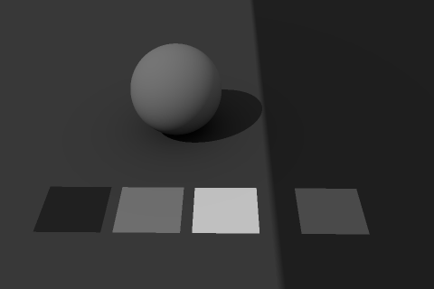
阴天、柔光、补光很足
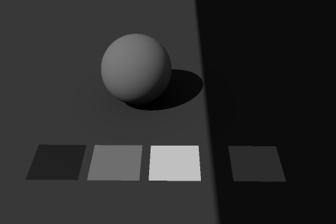
晴天里阴影偏亮（有大面积反光）
晴天直射、室内窗光
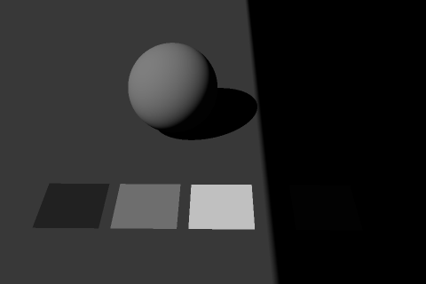
地牢、夜晚火把
暗场景请靠光比变暗，而不是整体欠曝：火盆照到的地方保持正确曝光（角色、道具、怪物在亮处依然看得清），其余地方只给很弱的环境光。整体欠曝会把亮处的材质一起压暗，读不清，暗部也会挤成一团。
⑥ 操作：校准一张图的灯光
- 按场景表选类型，记下目标 EV100 和光比。
- 户外：太阳、天空、天光按 ③ 设好，强度不动。室内、地牢：按 ④ 算出主光的流明。
- Pixel Inspector 读主光下灰卡的 Luminance Before Tonemap，换算成 EV100（2.8 的对照表）。人工光差 1 档就 ×2 或 ×½；自然光以读数为准，改相机。
- 读阴影里的灰卡，算光比。偏亮（不够“硬”）就减补光；偏暗就加补光或反光板。
- 全局 PPV 的快门按最终 EV100 填，Final Color 约 0.157 就完成了；把 EV100、光比登记进场景表。
2.8 曝光体系：物理相机 + PPV 曝光过渡
不用自动曝光。每张图一个全局 PPV 定相机（正确曝光），区域 PPV 只混合曝光补偿（正常曝光）来做场景过渡。
① 全局 PPV：相机定“正确曝光”
设置（每张图一个，勾 Unbound）
- Lens → Exposure：Metering Mode = Manual，勾 Apply Physical Camera Exposure，Exposure Compensation = 0（夜晚这类创作偏移写在这里，如 −2）。
- Lens → Camera：ISO 100，Aperture 4（全项目固定），Shutter Speed 按下面的对照表填。
- 曝光 = 2曝光补偿 − EV100，EV100 = log₂(光圈² × 快门 × 100 ÷ ISO)；f/4、ISO 100 时就是 log₂(16 × 快门)。
为什么只用快门这一个旋钮
- 光圈还管景深（过场的 Cine Camera 开了对焦就会写入自己的光圈），ISO 在游戏里没有噪点可言。固定这两个，“快门 ↔ 场景亮度”就是一一对应的。
- UE 的快门只参与曝光计算，不影响运动模糊（源码里 Shutter Speed 只用在 EV100 公式里）。可填范围 0.01–8000，f/4 时覆盖 EV100 −2.6 ~ 17。
- 正确曝光交给相机（测出来），正常曝光交给曝光补偿（选出来）：两件事分开记，出问题时一眼看出是哪一个。
② 对照表：EV100 ↔ 灰卡读数 ↔ 照度 ↔ 快门
| EV100 | 灰卡读数（尼特） | 灰卡照度（lux） | Shutter Speed 填 | 相当于 | 典型场景 |
|---|---|---|---|---|---|
| 15 | 5900 | 10.3 万 | 2048 | 1/2048 秒 | 主城白天 |
| 14 | 2900 | 5.1 万 | 1024 | 1/1024 秒 | 主城白天 |
| 13 | 1500 | 2.6 万 | 512 | 1/512 秒 | 阴天 / 雾天 |
| 12 | 740 | 1.3 万 | 256 | 1/256 秒 | 阴天 / 雾天、黄昏 |
| 11 | 370 | 6400 | 128 | 1/128 秒 | 黄昏 |
| 10 | 180 | 3200 | 64 | 1/64 秒 | 黄昏 |
| 9 | 92 | 1600 | 32 | 1/32 秒 | |
| 8 | 46 | 800 | 16 | 1/16 秒 | 室内 |
| 7 | 23 | 400 | 8 | 1/8 秒 | 室内 |
| 6 | 12 | 200 | 4 | 1/4 秒 | |
| 5 | 5.8 | 100 | 2 | 1/2 秒 | 地牢 |
| 4 | 2.9 | 50 | 1 | 1 秒 | 地牢 |
| 3 | 1.4 | 25 | 0.5 | 2 秒 | 地牢 |
| 2 | 0.72 | 13 | 0.25 | 4 秒 | |
| 1 | 0.36 | 6.3 | 0.125 | 8 秒 | |
| 0 | 0.18 | 3.1 | 0.0625 | 16 秒 | |
| −1 | 0.09 | 1.6 | 0.0312 | 32 秒 | 夜晚户外 |
| −2 | 0.045 | 0.79 | 0.0156 | 64 秒 | 夜晚户外 |
灰卡读数 = Pixel Inspector 的 Luminance Before Tonemap（主光下的 18% 灰卡）。落在两行之间时直接算：EV100 = log₂(读数 ÷ 0.18)，快门 = 2EV100 ÷ 16。
③ 曝光补偿定“正常曝光”
正确曝光由相机按测光定，每张图只有一个；正常曝光是这张图想要的明暗，写成曝光补偿。下面 5 张是同一个小场景（光比 2.5 档）在不同曝光补偿下的样子：
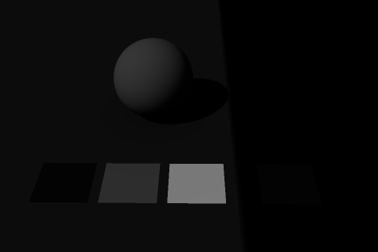
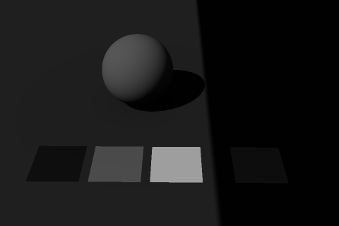
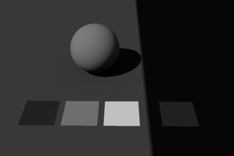
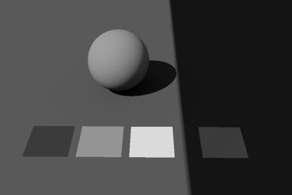
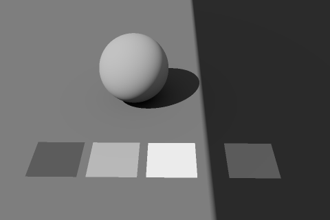
大多数场景曝光补偿就是 0；夜晚可以 −1 ~ −2，雪地、沙漠可以 +0.5。暗场景靠光比变暗，不要整体欠曝（2.7 ⑤）。
④ 场景过渡：PPV 之间只混合曝光补偿
不用自动曝光，所以从户外走进山洞时，明暗变化靠后处理体积的混合来做。规则只有一条：相机参数只放全局 PPV；区域 PPV 只放曝光补偿和可以插值的调色参数。
全局 PPVUnbound · Priority 0
相机：Manual · 物理相机 ✓ · ISO 100 · f/4 · 快门 1024（户外 EV100 14）· 曝光补偿 0
Tonemapper（ACES）· Lumen 设置 · 基础 Look
区域 PPV：山洞Blend Radius 8 米
曝光补偿 +7（等效 EV100 7）· 白平衡、调色微调
区域 PPV：熔岩区按时间混合
曝光补偿 −1 · 暖色调色 · Bloom · 热浪材质
从户外（EV100 14）走进山洞（EV100 7）：混合哪个参数，过渡才均匀
横轴是区域 PPV 的混合权重，纵轴是画面比户外亮了几档。UE 对所有数值参数都按“数值”线性插值；曝光补偿本身就是档数，所以均匀；快门和 ISO 是倍数，插值后按档看就很不均匀。
混合到一半时：用曝光补偿是 +3.5 档（正好一半）；用快门只有 +1.0 档，权重到 90% 才 +3.2 档，最后一下子跳完；用 ISO 则已经 +6.0 档，一进去就几乎全亮了。所以场景过渡一律用曝光补偿，快门只在全局 PPV 里定基准。
做法：户外走进山洞
- 全局 PPV 按户外定相机：EV100 14 → 快门 1024，曝光补偿 0。
- 山洞里按 2.7 打光、测光，得到山洞的 EV100（例如 7）。
- 山洞 PPV（不勾 Unbound）只勾 Exposure Compensation，填 户外 EV100 − 山洞 EV100 = +7；Blend Radius 5–10 米。
- 嵌套的区域（山洞里的更深处）也填相对全局相机的值，不是相对外层体积：曝光补偿是“覆盖”不是“叠加”。同一优先级时小体积排在大体积后面，进到内层自然由内层接管。
- 用 Show → Visualize → Post Process Stack（非 Shipping 包可用）看当前有哪些 PPV、各自权重多少；Pixel Inspector 的 PreExposure 应该从 2−14 平滑变到 2−7。
哪些参数可以放进区域 PPV
| 参数 | 混合方式（源码） | 用法 |
|---|---|---|
| Exposure Compensation | 按数值插值 = 按档均匀 | 过渡就用它 |
| Shutter Speed、ISO、Aperture | 按数值插值，换算成档不均匀（上图） | 只放全局 PPV |
| Metering Mode、Apply Physical Camera Exposure | 开关：权重一大于 0 就整个切过去 | 只放全局 PPV |
| Tonemapping Method（Film → Method）、Local Exposure Method | 开关 | 只放全局 PPV |
| 白平衡 Temp、Tint | 插值 | 可做氛围；Temperature Type 是开关，全项目统一用 White Balance |
| Color Grading（Global / Shadows / Midtones / Highlights）、Scene Color Tint | 插值 | 可做氛围 |
| Bloom、暗角、颗粒、局部曝光的对比系数 | 插值 | 可以 |
| Global Illumination Method、Reflection Method、Lumen 的 Quality / Detail / View Distance / Max Trace Distance / Ray Lighting Mode | 开关 | 只放全局 PPV |
| Lumen Skylight Leaking、Diffuse Color Boost | 插值 | 不物理，少用（2.9） |
| Blendables 里的后处理材质实例 | 材质参数按权重插值 | 热浪、扭曲等 |
视口、过场和 UI 捕获
- 编辑器视口：视图模式菜单 → Exposure 勾 Game Settings 才和游戏一致。EV100 滑条只用来临时预览。
- 过场 Cine Camera：开了对焦或曝光，相机自己的光圈、快门、ISO 会写进物理相机。过场统一用 f/4、ISO 100，在相机的后处理里只调快门和曝光补偿。
- SceneCapture（UI 角色展示、头像）：会先叠加捕获位置上的场景 PPV（Unbound 的全局 PPV 一定生效），再叠加捕获组件自己的后处理设置。所以展示台的捕获组件要在自己的后处理里勾上测光方式、物理相机、ISO、光圈、快门和曝光补偿，按展示台的灯光定 EV100，才不会跟着所在地图的相机变。另外 SceneCapture 默认关掉 Lumen，需要时在组件里重新打开。
- 局部曝光：项目默认的 0.8 / 0.8 保留，作为 Look 的一部分；标定读数时临时关掉。
2.9 Lumen 设置：先物理正确，再调性能
Lumen 只负责把直接光和自发光“弹”到别处去。只要灯光、材质、曝光都对，默认参数基本就是对的；要改的多半是覆盖范围和漏光。
① 工程层面已经具备
Lumen GI 与反射（r.DynamicGlobalIlluminationMethod=1、r.ReflectionMethod=1）、硬件光追（r.RayTracing=True）、距离场、虚拟阴影贴图、MegaLights 都已开启。Lumen 只做一件事：把直接光、天光和自发光“弹”到别处。它和灯光一样是线性的，灯光、材质、曝光对了，Lumen 的结果就对；不要用 Lumen 参数去补画面的亮度。
② 必改：缓存光照的曝光范围
Lumen 的缓存光照和天光的实时捕获用一个固定的预曝光来存储，r.EyeAdaptation.CachedLightingPreExposure 默认 4，只覆盖曝光 −8 ~ +12 档。晴天 EV100 14–15 超出这个范围，光照会被截断，屏幕上会出现 “Cached lighting in Lumen and real-time sky capture lighting is going to be clipped” 的警告。改成 8（覆盖 −4 ~ +16，源码注释的说法是 “fully covers physically based lighting range”）。它是固定值，不随画面曝光变化，也不改变画面亮度。
③ 全局 PPV 的 Lumen 参数（都是开关型，只放全局 PPV）
| 参数（PPV → Global Illumination / Reflections） | 默认 | 建议 |
|---|---|---|
| Global Illumination Method / Reflection Method | Lumen | 保持 Lumen |
| Lumen Scene Lighting Quality / Final Gather Quality | 1 / 1 | 保持 1。PPV 的 Final Gather Quality 是乘在变量上的：填 2 时每个屏幕探针的光线 ×4，开销接近电影档（3.1）；要提画质，按档位改变量（3.3） |
| Lumen Scene Detail | 1 | 保持 1；小物体进不了 Lumen 场景时再加 |
| Lumen Scene View Distance / Max Trace Distance | 20000 cm | 保持默认。源码注释：Max Trace Distance 太小，天光会漏进大山洞 |
| Ray Lighting Mode | Project Default | 高画质反射可以试 Hit Lighting for Reflections（需要硬件光追） |
| Max Roughness To Trace Reflections | 0.4 | 保持 |
两个“作弊”参数（可以混合，但不物理）：Skylight Leaking（默认 0）让天光漏进室内，源码说明就写着 “non-physically based”；室内太暗应该用曝光过渡解决（2.8），只有玩法可读性确实需要时才给一点（滑条上限 0.02），并写进验收表。Diffuse Color Boost（默认 1）大于 1 时，间接光里的材质反射率会被放大（源码注释同样说它 “aren't physically correct”），保持 1。
④ 自发光和 Lumen
- Lumen 会让自发光照亮周围：大面积的熔岩、发光地面、窗户不用再配一圈点光源，反光自然正确。
- 又小又亮的自发光（火星、小灯珠）会让 Lumen 出噪点；重要的光源仍然用真实的灯，自发光只负责“看起来亮”。
- 自发光的强度要按物理量级定（2.10），否则 Lumen 弹出来的光会和画面上看到的亮度对不上。
⑤ 用路径追踪做“标准答案”
- 标定场景和每张图的关键机位，视口切到 Path Tracing（视图模式菜单；工程已开硬件光追），等它收敛。
- 用 Pixel Inspector 读阴影里、室内的灰卡；切回 Lit 再读一次。
- Lumen 和路径追踪相差 0.5 档以内就合格；差得多，先查材质（BaseColor 是否过亮）、再查 Lumen 场景覆盖（视图模式 → Lumen → Surface Cache，粉色的地方是没进 Lumen 场景的物体）。
2.10 自发光与特效
物理曝光下，同一个自发光在白天和地牢里看起来会差十几档。先把自发光分成两类，再重做特效的颜色渐变。
① 自发光分两类
发光体：按绝对亮度（尼特）
灯罩、窗户、熔岩、火盆、会照亮环境的法阵。Emissive 填的就是亮度（尼特，和 Scene Color 读数同一单位），白天看起来暗、地牢里看起来亮，这是物理正确的，Lumen 也按这个亮度把光弹出去。
定法：想比这类场景的灰卡亮 N 档，Emissive = 0.18 × 2EV100 + N（下表）。
玩法提示、技能特效、UI 3D：跟着曝光走
拾取物光圈、选中描边、伤害数字、技能特效，在任何场景下屏幕亮度都要一样。做法：母材质里把强度乘 EyeAdaptationInverse 节点（Alpha = 1 表示完全抵消曝光，0 表示不抵消，0.5 就是“一半跟着曝光走”）。
这样 Emissive 按“正确曝光下比灰卡亮 N 档 = 0.18 × 2N”来填，与场景 EV100 无关，下面 ② 的表直接适用。迁移时旧特效的强度也能原样保留。
| 场景（EV100） | 与灰卡一样亮 | +3 档 | +6 档 |
|---|---|---|---|
| 晴天（15） | 5900 | 4.7 万 | 37.7 万 |
| 室内（7） | 23 | 180 | 1500 |
| 地牢（4） | 2.9 | 23 | 180 |
| 月夜（−1.7） | 0.06 | 0.44 | 3.5 |
发光体的 Emissive 数值（尼特）。白天要比灰卡亮 3 档，自发光就要几万尼特。
| 真实世界的亮度 | 尼特（cd/m²） |
|---|---|
| 正午的太阳圆盘 | 16 亿 |
| 磨砂白炽灯泡 | 13 万 |
| 荧光灯管 | 1.2 万 |
| 正午晴空 | 1 万 |
| 月球表面 | 2500 |
| 正午阴天的天空 | 1000 |
| 普通 LCD 显示器峰值 | 250 |
| sRGB 标准观看环境里的显示器白 | 80 |
② 自发光强度和屏幕亮度（玩法类，或按“比灰卡亮几档”理解）
| 比灰卡亮 | Emissive 数值 | Filmic 显示 | ACES 2.0 显示 |
|---|---|---|---|
| 0 档 | 0.18 | 118 | 110 |
| +1 档 | 0.36 | 170 | 148 |
| +2 档 | 0.72 | 208 | 184 |
| +3 档 | 1.44 | 232 | 212 |
| +4 档 | 2.88 | 245 | 231 |
| +5 档 | 5.76 | 252 | 243 |
| +6 档 | 11.52 | 255 | 249 |
| +7 档 | 23.04 | 255 | 252 |
| +8 档 | 46.08 | 255 | 254 |
反过来，想让自发光在屏幕上到某个亮度，需要：
| 目标像素值 | Filmic 需要 | ACES 2.0 需要 |
|---|---|---|
| 200 | +1.7 档（Emissive 0.58） | +2.5 档（Emissive 1.02） |
| 230 | +2.9 档（Emissive 1.34） | +3.9 档（Emissive 2.69） |
| 245 | +4.0 档（Emissive 2.88） | +5.3 档（Emissive 7.09） |
起点建议：灯罩、屏幕、UI 3D 元素 +1 ~ +3 档；符文、法阵 +3 ~ +5 档；火焰核心、闪光 +5 ~ +7 档。ACES 下要达到 Filmic 时代的亮度，像素值 230 的亮部要多给 +1.0 档，245 接近白时多给 +1.3 档。
③ 特效重调：用一张火焰贴图看懂要改什么
下面这张火焰是按 Filmic 时代的常见做法生成的：灰度火焰 × 单一橙色 #FF8018，材质里强度 ×26。它在 Filmic 下的样子（②）就是我们想保住的效果。目标是：新贴图 + ACES ≈ 旧贴图 + Filmic。
原来：旧贴图
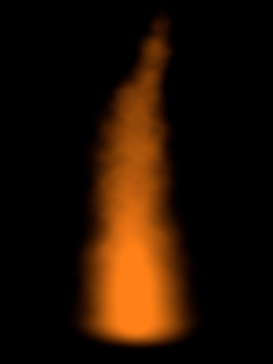
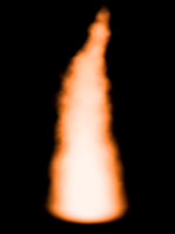
改后：新贴图
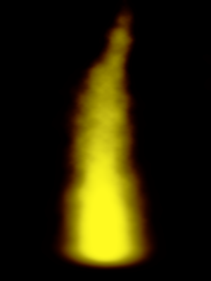
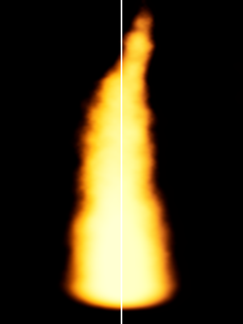
- 只改模式（③）：ACES 保色相，橙色越亮只会越淡、偏向粉白，不会自己变黄：整团火变成粉橙色、发白发虚，黄芯没了。和 ② 的平均色差 8.7（4–5 就一眼能看出来）。
- 改贴图（④ → ⑤）：灰度形状完全不动，只把“乘单一橙色”换成“按灰度上渐变色”，越亮越黄；强度系数从 ×26 降到 ×11.3。⑤ 和 ② 的平均色差 0.7（95% 的像素在 1.6 以内），并排也很难分出来。
- ④ 单独看会比 ② 更黄、中间调偏橄榄色，这是正常的：贴图里存的是“ACES 下要显示成这个颜色所需要的颜色”，乘上强度、经过 ACES 才是最终效果。不要按贴图本身的观感去“修”它。
贴图的上色渐变（横轴 = 灰度贴图的像素值 0–255）
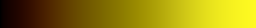
| 灰度像素值 | 40 | 64 | 96 | 128 | 160 | 192 | 224 | 255 |
|---|---|---|---|---|---|---|---|---|
| 旧（灰度 × 橙色） | #280E01 | #401B02 | #602C04 | #803D06 | #A04E0B | #C05F0F | #E07014 | #FF8018 |
| 新（渐变映射） | #431B00 | #5E3B00 | #776100 | #928300 | #B3A70A | #D7D018 | #F2ED1E | #FFFA21 |
怎么改一张特效贴图
- 灰度形状不用重画：同一张灰度贴图，只换上色方式。
- 上色改成渐变映射：PS 里用“渐变映射”调整图层，按上表的节点取色；Niagara / 材质里用 1D 渐变贴图或 Curve Atlas，按灰度采样。
- 强度系数按新贴图重新定（这张火焰 ×26 → ×11.3）；技能特效的母材质乘 EyeAdaptationInverse，这些数值在任何场景曝光下都直接适用。
- 在标定场景里，和 Filmic 版截图并排看：色差 ≤ 2 就算还原了，核心不糊白、外圈不发灰。
图中的强度是“曝光后”的数值（相当于正确曝光、曝光补偿 0），渲染只经过色调映射，没有 Bloom、没有叠加混合，用来说明颜色关系。
2.11 后期调色与氛围过渡
调色放在最后：灯光、曝光、Lumen、自发光都对了，再用 Color Grading 叠项目风格；同一张图里从正常环境走到熔岩环境，用“物理层 → 曝光层 → 调色层”三层一起过渡。
① 项目 Look：在全局 PPV 上用 Color Grading 做
- ACES 2.0 默认是“中性原片”。项目风格（对比、饱和、暗部偏冷、高光偏暖等）用 Color Grading 的 Global / Shadows / Midtones / Highlights 来做。UE 的调色在色调映射之前、直接作用于场景线性值，这正是 ACES 推荐的工作方式。
- 想先回到接近 Filmic 的观感，可以从第一章拟合的数开始：Global Contrast ×1.15、Saturation ×0.95（1.4）。如果还想让中灰和 Filmic 一样亮（118 而不是 110），全局曝光补偿再给 +0.2 档，作为全项目统一的偏移写进规范。
- 做成共享预设：把 Look 存进一个带 Post Process 组件（勾 Unbound）的蓝图，参数写在类默认值里；每张图放一个实例，改一处全项目生效。它的 Priority 设得比每张图的全局 PPV 高，并且只勾调色相关的参数，相机仍然由全局 PPV 决定。
- LUT 贴图在 ACES 下不生效。实在需要 LUT 式调色，可以用 After Tonemapping 的后处理材质，但有额外开销，移动端慎用。
② 例：从正常环境走到熔岩环境
氛围过渡分三层，先物理、再曝光、最后调色。只做第三层（整屏染橙），角色、怪物、地面的颜色会一起变橙，读不清；熔岩自己也没有照亮地面和角色，看起来是“贴了一层滤镜”。
1物理层：灯光与材质
- 熔岩材质按发光体定自发光：比区域灰卡亮 3–5 档。例如熔岩区基准 EV100 12：灰卡 737 尼特，熔岩约 5900–23600 尼特。
- 沿熔岩河放几盏 1500–2000 K 的矩形光、点光做主照明（工程开了 MegaLights，数量不是问题），Lumen 再把熔岩的光弹到岩壁和角色底面。
- 热气、烟尘用 Local Fog Volume 放在熔岩区，它按自己的形状淡出，不需要额外混合。
靠近熔岩时自然变化，不用写过渡逻辑。
2曝光层：区域 PPV 的曝光补偿
- 熔岩区多了大量自发光和暖光，相机不变的话亮处会过曝：曝光补偿 −0.5 ~ −1，保住熔岩和火光的层次。
- 如果熔岩区是暗的洞穴，则按 2.8 的山洞做法给正的曝光补偿。
和调色在同一个区域 PPV 里，一起混合。
3调色层：区域 PPV 的 Color Grading
- 白平衡 Temp 从 6500 调到 7000–7500：White Balance 模式下数值越大画面越暖。
- Highlights 的 Gain 偏暖，Shadows 稍偏红褐，Global Saturation 略加；Bloom 稍加。
- Blendables 里放热浪扭曲的后处理材质实例，参数随权重一起混合。
最后才加，幅度宁小勿大。
物理层由灯光衰减、Local Fog Volume 的形状决定，越靠近熔岩越强；曝光层和调色层由同一个区域 PPV 的权重决定（Blend Radius 或 Timeline）。
③ 过渡怎么做
A. 区域 PPV + Blend Radius
最简单，适合边界清楚的区域。注意权重按镜头位置算：体积要往上、往镜头一侧做大（2.8 的示意图）。Blend Radius 5–10 米。
B. 触发器 + Timeline 推 Blend Weight（推荐）
区域 PPV 勾 Unbound、Blend Weight 0；角色进入触发框时 1.5–3 秒推到 1，离开时推回 0。时机由角色决定，从哪个方向进都一样；同一个 Timeline 可以同步推不在 PPV 里的东西。
④ 不在 PPV 里、不会跟着混合的东西
- 高度雾、天空大气、太阳：不是后处理参数。区域性的雾用 Local Fog Volume；非要改全局的雾或太阳，就用上面的 Timeline 同步推，并接受整张图一起变（俯视角能看到的天空很少，通常可以接受）。
- 开关型参数（Tonemapping Method、测光方式、物理相机开关、GI 方法、Lumen 质量）：放进区域 PPV 会瞬间跳变，见 2.8 的表。
⑤ 护栏（验收时逐条看）
- 氛围用的曝光补偿最多 ±1 档；更大的明暗差（户外 → 山洞）属于场景过渡，按 2.8 做。
- 调色后在标定场景里重新看色卡：可以整体偏暖，但白卡要仍然看得出是白、肤色仍然是肤色。
- 角色、怪物在两种氛围下都读得清：亮处灰卡的屏幕像素值都在 100–120 左右。
- 不要用调色补灯光：缺光就加灯，颜色不对先查灯的色温。
- 不要在区域 PPV 里改 Tonemapper、测光方式和物理相机开关。
2.12 DCC 和 UE 对齐
DCC 里看到的和 UE 里看到的要是同一个灰卡。
Substance Painter、Nuke、DaVinci Resolve、Maya / Houdini 等支持 OCIO 的软件，用 ACES 2.0 配置（sRGB 显示、SDR 100 nit）预览渲染结果时，要额外 +0.58 档曝光，因为 UE 在 ACES 前乘了 1.5。用灰卡核对最直观：
| 同一个 18% 灰（曝光后的场景值 0.18） | 屏幕像素值 |
|---|---|
| UE：ACES 2.0 + sRGB 编码（内部 ×1.5） | 110 |
| DCC：OCIO ACES 2.0，sRGB 显示，视图曝光 0 | 89 |
| DCC：视图曝光（Exposure / EV）+0.58 | 110 |
- 推荐保留 UE 默认的 1.5（
r.HDR.Aces.SceneColorMultiplier），全项目统一在 DCC 里加 +0.58 档。改成 1.0 也能和行业标准完全一致，但所有图会暗 0.58 档，又要用曝光补偿补回来，没有实际好处。两种做法选一种，全项目统一。 - 只画 BaseColor 时不需要这个偏移：按 2.5 的 sRGB 值画即可。只有在 DCC 里预览带光照、自发光的渲染结果时才需要。
- DCC 里同样放一张 18% 灰卡做参照：灰卡在 DCC 预览里也显示 110，两边的灯光、特效才有可比性。
2.13 逐关卡迁移与验收
先把单位换成物理量、保住画面，再按物理重打光；每张图按同一张清单验收。
① 一张图的迁移顺序
- 先等效换算，把单位换成物理量、画面不变
选定这张图的基准 EV100，把所有“绝对亮度”的数值乘以 2EV100（EV100 14 就是 ×16384），再把旧图兼容预设（2.4）换成物理相机、快门按这个 EV100 填。曝光正好除回去，画面应该和迁移前几乎一样，可以用截图对比确认。要乘的东西：
- 所有灯光的强度（平行光、点光、聚光、矩形光，以及 Niagara 粒子的光源）；
- 高度雾的 Fog Inscattering Color、Directional Inscattering Color，体积雾的 Emissive；
- 天光：用指定 Cubemap 时乘它的 Intensity；捕获场景时乘被捕获的天空球自发光（天光会跟着变，不要两边都乘）；
- 环境材质的自发光：可以批量乘，也可以先在母材质里乘 EyeAdaptationInverse（Alpha 1），旧数值原样保留；特效、UI 3D 元素同理。
- 再按物理重打光 太阳、天空换成天空大气 + 实时天光（2.7 ③），人工光按 2.7 ④ 重定；读灰卡、定光比，登记进场景表。
- 特效、自发光 发光体改成尼特、去掉 EyeAdaptationInverse；技能特效保留它，按 2.10 重画渐变。
- 场景过渡与氛围 区域 PPV 只留曝光补偿和调色参数（2.8、2.11）。
- Lumen 检查、调色，按下表验收 截图归档，之后改灯光都和这一版对比。
按关卡整图切换（1.4 第 6 步），优先切新做或要重打光的关卡；同一张图不要一半物理一半旧值。
② 验收清单
| 检查项 | 怎么查 | 合格标准 |
|---|---|---|
| 相机 | 全局 PPV | Manual、物理相机开、ISO 100、f/4，快门对应登记的 EV100；区域 PPV 里没有开关型参数 |
| 主光下的灰卡 | Pixel Inspector：Luminance Before Tonemap | 换算的 EV100 与登记值相差不超过 ±0.3 档 |
| 曝光 | 同一点的 Final Color（关掉局部曝光读） | 约 0.157；屏幕像素值 104–116（夜晚等有曝光补偿的图按补偿后的值） |
| 白卡、黑卡 | 读 Luminance Before Tonemap | 相对灰卡 +2.3 档 / −2.5 档（4.8 倍 / 约 1/5.6）；白卡不糊，黑卡还能看出纹理 |
| 光比 | 阴影里的灰卡读数 ÷ 主光下的读数，换算成档 | 与登记的光比相差不超过 ±0.5 档 |
| 自发光、特效 | 读数换算成档（log₂(读数 ÷ 灰卡读数)） | 与登记的档位一致；核心不糊白、颜色不跑 |
| 场景过渡 | 走一遍所有区域；Show → Visualize → Post Process Stack | 没有跳变；各区域的曝光补偿与登记一致 |
| Lumen | 关键机位与 Path Tracing 对比 | 阴影、室内灰卡相差不超过 0.5 档；屏幕上没有缓存光照被截断的警告 |
| 对比截图 | 固定相机书签，HighResShot 1 | 暗部不发灰；与旧版对比，亮部层次变多而不是变脏 |
| UI 捕获、过场 | SceneCapture 展示台、过场镜头截图 | 与登记的效果一致 |
③ 为 HDR 输出留好路
ACES 2.0 的 SDR 和 HDR 是同一曲线家族，开 HDR 后自动按屏幕峰值亮度展开，观感一致；Filmic 在 HDR 下是“先算出 SDR 结果，再反推扩展”，一致性较差。物理单位的灯光和自发光在 HDR 下也能直接用上更高的亮度范围。以后要支持 HDR 屏幕，这套流程不需要返工。
第三章
效果与性能：常用控制台变量
按 UE 5.8.4 源码和 Epic 官方的画质分档整理：每个变量写清楚在哪里设、各档位的值、调高调低的效果和代价，以及本项目的建议。表格里的默认值和各档数值都由脚本直接从引擎源码和 ini 读出（src/make_cvars.py），不是凭记忆。
3.1 先搞懂：变量写在哪、谁说了算
控制台变量（CVar）是引擎的开关和旋钮。同一个变量可以从很多地方设置，最后生效的是优先级最高的那一处；改了不生效，十有八九是被更高优先级挡住了。
| 设置位置 | 写法 | 优先级 | 适合做什么 |
|---|---|---|---|
| 画质分档（Scalability） | Config/DefaultScalability.ini，每档一节，如 [GlobalIlluminationQuality@3]；Windows 平台再被 Config/Windows/WindowsScalability.ini 覆盖 | 低 | 按档位区分效果与性能，主要写在这里 |
| 本项目的游戏设置菜单 | GameGraphicsSettingsLibrary 按 Config/Windows/WindowsGame.ini 的 Presets 写 sg.* 和部分 r.* | 同上 | 玩家可调的项 |
| 项目设置 | Project Settings → Rendering，存在 DefaultEngine.ini 的 [/Script/Engine.RendererSettings] | 中 | 功能开关：Lumen、虚拟阴影、MegaLights、硬件光追、距离场 |
| 全局 ini | DefaultEngine.ini 的 [SystemSettings] 或 [ConsoleVariables] | 较高 | 所有档位都一样、不希望被菜单改动的值 |
| 设备配置 | Config/DefaultDeviceProfiles.ini 里的 +CVars=（也能写 sg.* 选档） | 高 | 按平台、按机型 |
| 控制台 | 编辑器或游戏里按 ~ 输入，如 r.Lumen.ScreenProbeGather.DownsampleFactor 32 | 最高 | 临时试验，重启后失效 |
低优先级的设置会被高优先级挡住。例：把 r.VolumetricFog 写进 [SystemSettings]，游戏菜单（用 Scalability 优先级写）就再也改不动它。所以想分档就写 Scalability，想全档统一才写 [SystemSettings]。
r.X = "16" LastSetBy: Scalability，一眼就知道是谁设的；变量名后加 ? 打印源码里的说明。Scalability 2 把所有分组一次切到“高”，sg.GlobalIlluminationQuality 2 只切 GI 一组。
画质分组与档位
引擎把变量分成 10 个组，每组 5 档：0 低、1 中、2 高、3 极高（Epic）、4 电影（Cinematic），各档的值写在引擎的 Engine/Config/BaseScalability.ini。Epic 的定位（Lumen 性能指南，5.8）：极高 = 主机 30 fps 预算，高 = 60 fps，每降一档开销大约减半；电影档给离线渲染用。
| 分组 | 管哪些 | 本章 |
|---|---|---|
sg.GlobalIlluminationQuality | Lumen 全局光照、Surface Cache、光追场景、距离场 AO | 3.3 |
sg.ReflectionQuality | Lumen 反射、屏幕空间反射 | 3.4 |
sg.ShadowQuality | 虚拟阴影贴图、MegaLights、体积雾开关与分辨率 | 3.5、3.6、3.8 |
sg.EffectsQuality | 天空大气、半透明光照体积、材质质量、Niagara 品质 | 3.7 |
sg.AntiAliasingQuality | TSR 的历史分辨率、闪烁抑制等 | 3.9 |
sg.PostProcessQuality | Bloom、景深、动态模糊、曝光 | 3.10 |
sg.ViewDistanceQuality / Texture / Foliage / Shading | 视距、贴图流送、植被密度、头发与各向异性材质 | 本文不展开 |
PPV 里的质量滑条是乘在变量上的
后处理体积的 Lumen 质量参数不是独立的设置，而是在变量的基础上再放大，所以它们是很贵的旋钮：
- Final Gather Quality（默认 1）：每个屏幕探针的光线 = 变量值 × √质量，再取 2 的幂（源码 LumenScreenProbeGather.cpp 452–457）。填 2 时 8×8 变成 16×16，光线数 ×4，和电影档一样；≥ 6 时探针间距再减半。
- Lumen Scene Lighting Quality（默认 1）：多次反弹的半球探针分辨率 × √质量，≥ 6 时探针间距减半（LumenRadiosity.cpp 207–224）。
所以第二章 2.9 的建议是保持 1：要提高画质，按档位改变量，不要在 PPV 里拉滑条。
怎么测：一次只改一个变量
- 选 3 张有代表性的图（主城白天、地牢、特效多的战斗场景），各存一个相机书签，固定机位、固定分辨率。
stat unit看帧时间是卡在 Game、Draw 还是 GPU；stat gpu看每个 pass 的 GPU 毫秒；ProfileGPU（Ctrl+Shift+,）看单帧的详细分解。- 测单个功能时临时输入
r.RDG.AsyncCompute 0，让 Lumen 等异步 pass 不和别的重叠，读数才准；只用于测量，不要写进配置，最终性能要在异步开着时再测一遍。 - 改一个变量，记一次读数和截图，再改下一个。Epic 给 Lumen 的预算：内部分辨率 1080p 时，30 fps 档约 8 ms、60 fps 档约 4 ms（GI + 反射 + Surface Cache 一共）。
3.2 本项目的现状（扫描 2026-10-27）
先看清楚项目现在的配置，后面各节的建议都以此为前提。
① 游戏设置菜单的四档预设（Windows）
Config/Windows/WindowsGame.ini 的 [/Script/UE_game.GameGraphicsConfig] 定义了四档，选档时 GameGraphicsSettingsLibrary 先把所有画质分组设成同一档，再按分项覆盖：
| 菜单预设 | 画质分组 | 渲染分辨率 | 阴影组 | 特效组 | 抗锯齿组 | 体积雾 |
|---|---|---|---|---|---|---|
| Low | 0 低 | 50% | 0 | 0 | 0 | 关 |
| Medium | 1 中 | 80% | 2 | 1 | 2 | 关 |
| High | 2 高 | 100% | 3 | 2 | 2 | 关 |
| Epic | 3 极高 | 100% | 4 电影 | 2 | 2 | 开 |
GI、反射、后处理组跟着“画质分组”走；阴影、特效、抗锯齿按上表单独覆盖。渲染分辨率由菜单直接写 r.ScreenPercentage。
② 值得注意的五件事
- Epic 预设的阴影用的是电影档
sg_ShadowQuality=4对应[ShadowQuality@Cine]：虚拟阴影的软阴影光线 16 条 × 每条 8 个采样（极高档 8 × 4）、页池 8192、MegaLights 关掉降采样按全分辨率算。电影档是给离线渲染准备的，实时游戏里阴影投影的开销会成倍增加。建议 Epic 预设改用 3（3.5）。 - Windows 平台关掉了网格距离场
Config/Windows/WindowsEngine.ini（Config/PC/下有同样一份）在[/Script/Engine.RendererSettings]写了r.GenerateMeshDistanceFields=False，覆盖了DefaultEngine.ini的 True。后果：Lumen 只能用硬件光追；不支持硬件光追的显卡会退回软件追踪，而软件追踪要追的正是网格距离场（全局距离场也由它合成），GI 会明显变差；距离场 AO、距离场阴影也不可用。MegaLights 同样依赖光追。需要拍板：把“支持硬件光追”定为 PC 最低配置，或者在 Windows 上重新打开距离场（网格构建时间和内存会增加）。控制台输入r.GenerateMeshDistanceFields可以确认当前值。 - 项目的阴影分档基本只改了传统阴影参数
DefaultScalability.ini/WindowsScalability.ini的[ShadowQuality@N]改的是r.Shadow.CSM.*、r.Shadow.MaxCSMResolution这类级联阴影参数（菜单也会写r.Shadow.MaxCSMResolution）。工程开了虚拟阴影贴图，太阳不走级联阴影，这些值基本不起作用；虚拟阴影和 MegaLights 实际用的是引擎 BaseScalability 的值。另外项目在所有档位都把r.Shadow.RadiusThreshold设成了 0（引擎 0.06 / 0.05 / 0.04 / 0.01），也就是再小的物体也画进阴影，非 Nanite 物体多时会增加阴影深度的开销。 - Lumen GI 打开时，菜单里的 AO 选项不起作用
Lumen 用自己的近距离 AO（Short Range AO）代替 SSAO：只有
r.Lumen.DiffuseIndirect.SSAO=1并且关掉 Short Range AO 时才会再渲染 SSAO（源码 LumenDiffuseIndirect.cpp 309–313）。所以r.AmbientOcclusionLevels等只在 Low 预设（Lumen 关闭）时有用；同理，r.SSR.Quality只在 Lumen 反射关闭的 Low、Medium 档有用。 - 后处理分档里曝光还是锁定的
[PostProcessQuality@N]各档都是r.EyeAdaptationQuality=0，按第二章 2.4 改成 2。
另外两点前提：工程开了 MegaLights（r.MegaLights.EnableForProject=True）和硬件光追（r.RayTracing=True，Lumen 默认优先用它）；软件追踪的模式在 5.8 默认是“Global Tracing”（r.Lumen.TraceMeshSDFs 默认 0，项目没改）。
3.3 Lumen 全局光照
分组 sg.GlobalIlluminationQuality：极高 = 屏幕探针每 16 像素一个；高 = 32 像素（官方的 60 fps 档）；中 = 改用更便宜的辐照度场（“Lumen Lite”）；低 = 关掉 Lumen，只剩天光。
| 变量 | 源码默认 | 低 | 中 | 高 | 极高 | 电影 |
|---|---|---|---|---|---|---|
r.Lumen.DiffuseIndirect.AllowLumen GI 开关 | 1 | 0 | 1 | 1 | 1 | 1 |
r.Lumen.FinalGatherMethod最终采集：0 辐照度场 / 1 屏幕探针 | 1 | — | 0 | 1 | 1 | 1 |
r.Lumen.ScreenProbeGather.DownsampleFactor屏幕探针间距（像素） | 16 | — | — | 32 | 16 | 8 |
r.Lumen.ScreenProbeGather.TracingOctahedronResolution每个探针的光线（边长） | 8 | — | — | 8 | 8 | 16 |
r.Lumen.ScreenProbeGather.NumAdaptiveProbes自适应补充探针 | 8 | — | — | 16 | 8 | 4 |
r.Lumen.ScreenProbeGather.RadianceCache.ProbeResolution辐射缓存探针分辨率 | 32 | — | — | 16 | 32 | 32 |
r.Lumen.ScreenProbeGather.RadianceCache.NumProbesToTraceBudget辐射缓存每帧更新探针数 | 100 | — | — | 100 | 150 | 350 |
r.Lumen.ScreenProbeGather.StochasticInterpolation随机插值（1 更省） | 1 | — | — | 1 | 0 | 0 |
r.Lumen.ScreenProbeGather.IrradianceFormat辐照度格式：0 球谐 / 1 八面体 | 1 | — | — | 1 | 0 | 0 |
r.Lumen.ScreenProbeGather.ShortRangeAO.DownsampleFactor近距离 AO 降采样 | 2 | — | 1 | 2 | 1 | 1 |
r.Lumen.ScreenProbeGather.ShortRangeAO.BentNormal弯曲法线（高光遮蔽更准） | 1 | — | 0 | 0 | 1 | 1 |
r.LumenScene.SurfaceCache.AtlasSizeSurface Cache 图集尺寸 | 4096 | — | 2048 | 3584 | 4096 | 4096 |
r.LumenScene.SurfaceCache.CardMaxResolution单张卡片最大分辨率 | 512 | — | 256 | 512 | 512 | 512 |
r.LumenScene.DirectLighting.UpdateFactor直接光：每帧更新 1/N | 32 | — | 128 | 64 | 32 | 32 |
r.LumenScene.DirectLighting.MaxLightsPerTile每块缓存最多几盏灯 | 8 | — | 4 | 4 | 8 | 8 |
r.LumenScene.Radiosity.UpdateFactor多次反弹：每帧更新 1/N | 64 | — | 128 | 128 | 64 | 64 |
r.LumenScene.Radiosity.ProbeSpacing多次反弹探针间距 | 4 | — | 4 | 8 | 4 | 4 |
r.LumenScene.Radiosity.HemisphereProbeResolution多次反弹每探针光线（边长） | 4 | — | 3 | 3 | 4 | 4 |
r.Lumen.TraceMeshSDFs.Allow软件追踪：允许网格距离场 | 1 | — | 0 | 0 | 1 | 1 |
r.Lumen.TranslucencyVolume.GridPixelSize半透明光照体积格子（像素） | 32 | — | 128 | 64 | 32 | 32 |
r.Lumen.HardwareRayTracing.HitLighting.Allowed允许命中点光照 | 1 | — | 0 | 0 | 1 | 1 |
r.RayTracing.Scene.BuildMode光追场景：0 快速构建 / 1 快速追踪 | 1 | 0 | 0 | 0 | 1 | 1 |
r.RayTracing.Geometry.SkeletalMeshes骨骼网格进光追场景 | 1 | — | 0 | 1 | 1 | 1 |
r.SkylightIntensityMultiplier天光强度倍数 | 1 | 0.8 | 1 | 1 | 1 | 1 |
各档的值来自引擎 BaseScalability.ini 的 [GlobalIlluminationQuality@N]；“—”表示该档不设置（保持当前值）；是本项目 Scalability ini 改过的值（Windows 以 Windows/WindowsScalability.ini 为准）。
屏幕探针间距第一旋钮
r.Lumen.ScreenProbeGather.DownsampleFactor
每 N×N 像素放一个屏幕探针。N 翻倍，探针数变成 ¼：间接光更糊，小物体的间接阴影变弱。
建议极高 16、高 32，保持引擎默认；8 是电影档，不要在游戏里用。
每个探针的光线
r.Lumen.ScreenProbeGather.TracingOctahedronResolution
值是边长，光线数是它的平方：8 → 64 条。越低方向性越差，粗糙表面的反射也变差。PPV 的 Final Gather Quality 会再乘它（3.1）。
建议保持 8。
世界空间辐射缓存第二旋钮
…RadianceCache.ProbeResolution · …RadianceCache.NumProbesToTraceBudget
远处的间接光来自一组世界空间探针：分辨率决定质量，每帧更新几个探针决定开销。预算太低，镜头快速移动时光照会“跳”。
建议俯视角镜头移动平缓，高档的 16 / 100 就够；传送、快速闪现后如果看到光照延迟，再加预算。
Surface Cache 的更新速度
r.LumenScene.DirectLighting.UpdateFactor · r.LumenScene.Radiosity.UpdateFactor
每帧只更新 1/N 的表面缓存。N 越大越省，但灯光变化（火把闪烁、开关灯、昼夜）传到间接光的速度越慢。MaxLightsPerTile 限制每块缓存参与计算的灯数，所以总灯数多也不太影响这里的开销。
建议保持各档默认；有大量闪烁光源的地图，用更低的直接光 UpdateFactor 换响应速度。
时间累积
r.Lumen.ScreenProbeGather.Temporal.MaxFramesAccumulated（默认 10）
累积的帧数越少，光照变化响应越快，但噪点和闪烁越多。
建议保持默认；火光拖影明显时试 6–8。
萤火虫抑制
r.Lumen.ScreenProbeGather.MaxRayIntensity（默认 10）
把单条光线的亮度钳在这个值以下，减少小而亮的自发光造成的闪点。按预曝光之后的值计算，所以和第二章的物理曝光无关。
建议保持默认；比它更好的办法是重要光源用真实的灯，小自发光不负责照明（2.9）。
硬件光追的场景规模
r.RayTracing.Culling（3）· .Radius（30000 cm）· .Angle（1°）
光追的加速结构（TLAS）每帧重建，开销和实例数成正比，Epic 建议裁剪后控制在 10 万以下；用 stat SceneRendering 里的 Ray tracing active instances 查看。裁剪按距离或投影角度去掉远处的小物体。
建议俯视角看不到 300 米外，可以试 r.RayTracing.Culling.Radius=15000（Epic 文档的示例值）；草、成片的小石子关掉 Visible In Ray Tracing。
命中点光照
r.Lumen.HardwareRayTracing.LightingMode（默认 0）
0 = 光线命中后读 Surface Cache，最快；1 = GI 和反射都在命中点重算材质和光照；2 = 只对反射这样做。1、2 都很贵，Epic 不建议游戏使用。
建议保持 0（项目设置里的 Ray Lighting Mode 同理）。
最后手段：积分降采样
r.Lumen.ScreenProbeGather.IntegrateDownsampleFactor（默认 1）
设为 2 时积分在半分辨率做，快很多，但更噪，法线贴图上的细节变糊。Epic 各档都没有开它。
建议只给低配机兜底用。
异步计算与调试
r.Lumen.AsyncCompute（1）· r.Lumen.Visualize
Lumen 默认在异步计算队列上和别的 pass 重叠。r.Lumen.Visualize 2 是性能总览（哪些像素在追光线），5 是 Surface Cache 覆盖情况。
建议保持开；调试视图只在排查时用，它本身也有开销。
3.4 Lumen 反射
分组 sg.ReflectionQuality：极高、高都用 Lumen 反射（高档半分辨率追踪）；中、低档关掉 Lumen 反射改用屏幕空间反射，粗糙表面的高光仍由 Lumen GI 提供。
| 变量 | 源码默认 | 低 | 中 | 高 | 极高 | 电影 |
|---|---|---|---|---|---|---|
r.Lumen.Reflections.AllowLumen 反射开关 | 1 | 0 | 0 | 1 | 1 | 1 |
r.Lumen.Reflections.DownsampleFactor反射降采样 | 1 | — | — | 2 | 1 | 1 |
r.Lumen.Reflections.MaxRoughnessToTraceForFoliage植被追反射的粗糙度上限 | 0.2 | — | — | 0.2 | 0.4 | 0.4 |
r.Lumen.ScreenProbeGather.MaxRoughnessToEvaluateRoughSpecularForFoliage植被粗糙高光的上限 | 0.8 | — | — | 0.4 | 0.8 | 0.8 |
r.Lumen.Reflections.ScreenSpaceReconstruction.NumSamples屏幕空间重建采样数 | 5 | — | — | 3 | 5 | 5 |
r.Lumen.Reflections.ScreenSpaceReconstruction.MinWeight重建最小权重 | 0 | — | — | 1 | 0 | 0 |
r.Lumen.TranslucencyReflections.FrontLayer.Allow允许半透明前层反射 | 1 | — | — | 0 | 1 | 1 |
r.Lumen.TranslucencyReflections.FrontLayer.Enable开启半透明前层反射 | 0 | — | — | 0 | 0 | 1 |
r.SSR.Quality屏幕空间反射质量 | 3 | 0 | 2 | 2 | 3 | 4 |
r.SSR.HalfResSceneColorSSR 用半分辨率场景色 | 0 | 1 | 1 | 1 | 0 | 0 |
各档的值来自引擎 BaseScalability.ini 的 [ReflectionQuality@N]；“—”表示该档不设置（保持当前值）；是本项目 Scalability ini 改过的值（Windows 以 Windows/WindowsScalability.ini 为准）。
粗糙度阈值第一旋钮
PPV 的 Max Roughness To Trace（默认 0.4）· r.Lumen.Reflections.MaxRoughnessToTraceClamp
粗糙度低于阈值的像素才专门追反射光线，更粗糙的直接用 GI 的结果近似，几乎免费。阈值越低，追反射的像素越少。Clamp 变量可以按档位给 PPV 的值设上限。
建议保持 0.4；性能紧张的档位用 Clamp 限到 0.3。用 r.Lumen.Visualize 7 看哪些像素在追反射。
植被的阈值
r.Lumen.Reflections.MaxRoughnessToTraceForFoliage
双面植被、次表面材质像素单独的阈值（高 0.2、极高 0.4）。Epic：设为 0 能省下明显的开销，几乎看不出差别。
建议高档设 0。
反射降采样
r.Lumen.Reflections.DownsampleFactor · …DownsampleCheckerboard
1 = 每像素一条；2 = 每 2×2 一条，更糊也更不稳定；棋盘格是介于两者之间的折中（每两个像素一条）。
建议保持各档默认；高档画面里湿地、水面闪烁明显时，试棋盘格。
直接关掉 Lumen 反射
r.Lumen.Reflections.Allow 0
换成屏幕空间反射，粗糙高光仍由 GI 提供。Epic 在 Xbox Series S 上这样做省了约 1 ms。
建议中、低档已经是这样；俯视角大多是粗糙地面，反射本来就便宜，高档以上不必关。
半透明的高质量反射
r.Lumen.TranslucencyReflections.FrontLayer.Enable（项目设置 High Quality Translucency Reflections）
给最前面一层半透明（玻璃、水面）追镜面反射，其余层用辐射缓存的模糊反射。开销明显，默认只在电影档打开。
建议保持关；确实需要的区域用 PPV 局部打开。
实验：复用辐射缓存
r.Lumen.Reflections.RadianceCache（默认 0）
粗糙反射的光线变短，远处改从 GI 的辐射缓存插值。只有大量像素的粗糙度在 0.2–0.4 之间时才有收益。
建议先不开；金属、湿地多的地图可以试。
3.5 阴影：虚拟阴影贴图
分组 sg.ShadowQuality。虚拟阴影有两块开销：画阴影深度（几何越多越贵，非 Nanite 物体尤其贵）和阴影投影（= 每像素的灯数 × 软阴影光线数 × 每条光线的采样数）。两块分开看，对症下药。
| 变量 | 源码默认 | 低 | 中 | 高 | 极高 | 电影 |
|---|---|---|---|---|---|---|
r.ShadowQuality阴影过滤质量（0 关闭动态阴影） | 5 | 0 | 2（引擎 3） | 4（引擎 5） | 5 | 5 |
r.Shadow.Virtual.MaxPhysicalPages物理页池（显存） | 2048 | 512 | 512 | 2048 | 4096 | 8192 |
r.Shadow.Virtual.ResolutionLodBiasDirectional平行光分辨率偏移 | 0 | 0 | 0 | 0 | −1.5 | −1.5 |
r.Shadow.Virtual.ResolutionLodBiasDirectionalMoving平行光移动时 | 0 | 0 | 0 | 0 | −1.5 | −1.5 |
r.Shadow.Virtual.ResolutionLodBiasLocal本地光分辨率偏移 | 0 | 1 | 1 | 0 | 0 | 0 |
r.Shadow.Virtual.ResolutionLodBiasLocalMoving本地光移动时 | 1 | 2 | 2 | 1 | 1 | 0 |
r.Shadow.Virtual.SMRT.RayCountDirectional平行光软阴影光线数 | 7 | 0 | 4 | 8 | 8 | 16 |
r.Shadow.Virtual.SMRT.SamplesPerRayDirectional平行光每条光线采样 | 8 | 2 | 2 | 4 | 4 | 8 |
r.Shadow.Virtual.SMRT.RayCountLocal本地光软阴影光线数 | 7 | 0 | 4 | 4 | 8 | 16 |
r.Shadow.Virtual.SMRT.SamplesPerRayLocal本地光每条光线采样 | 8 | 2 | 2 | 4 | 4 | 8 |
r.Shadow.Virtual.MarkCoarsePagesLocal本地光粗页标记 | 2 | 2 | 2 | 2 | 1 | 1 |
r.Shadow.RadiusThreshold太小的投影物剔除（屏幕半径） | 0.01 | 0（引擎 0.06） | 0（引擎 0.05） | 0（引擎 0.04） | 0（引擎 0.01） | 0 |
r.DistanceFieldShadowing距离场阴影 | 1 | 0 | 0 | 1 | 1 | 1 |
r.CapsuleShadows胶囊阴影 | 1 | 0 | 1 | 1 | 1 | 1 |
r.LightFunctionQuality灯光函数质量 | 2 | 0 | 1 | 1 | 1 | 1 |
各档的值来自引擎 BaseScalability.ini 的 [ShadowQuality@N]；“—”表示该档不设置（保持当前值）；是本项目 Scalability ini 改过的值（Windows 以 Windows/WindowsScalability.ini 为准）。
分辨率偏移
r.Shadow.Virtual.ResolutionLodBiasDirectional · …Local · …Moving
−1 分辨率翻倍，+1 减半。极高档平行光是 −1.5（约 2.8 倍），高档 0。移动中的灯缓存不住，单独用更低的分辨率。
建议俯视角镜头距离固定，0 ~ −1 已经很清晰；−1.5 留给近景展示和截图。
软阴影（SMRT）
…SMRT.RayCountDirectional · …SMRT.SamplesPerRayDirectional（本地光同名 Local）
光线数少了半影有噪点，设 0 就是硬阴影；每条光线的采样少了，最大软度受限。Epic：4–8 个采样就够。决定投影开销的是“每像素灯数 × 光线数 × 采样数”，和页数、缓存无关。
建议先把灯的 Source Radius、太阳的 Source Angle 调到合理（太大既贵又会扭曲半影），再考虑降光线数；Epic 预设别用电影档的 16 × 8。
物理页池
r.Shadow.Virtual.MaxPhysicalPages
不够时阴影会出现棋盘格或缺块，日志会报警告。只占显存，不直接增加每帧开销。
建议保持各档默认；用 r.Shadow.Virtual.Stats 1 看实际占用（需要时先 r.ShaderPrint 1）。
缓存与失效
r.Shadow.Virtual.Cache（1）
静止的物体和灯，阴影页可以一直复用。会让缓存失效的：灯移动或旋转、物体移动、WPO 动画（草、旗子）、骨骼动画。
建议保持开。植被设 World Position Offset Disable Distance，WPO 材质填 Max World Position Offset Displacement；大型建筑做成 Nanite。视图模式 → Virtual Shadow Map → Cache 看哪里在失效（红色）。
非 Nanite 物体
r.Shadow.RadiusThreshold · r.Shadow.Virtual.MarkPixelPagesMipModeLocal
非 Nanite 物体画进虚拟阴影要贵得多，Epic 建议所有支持的网格（包括低模）都用 Nanite。RadiusThreshold 在 CPU 上剔除屏幕上太小的投影物；MipMode 1 / 2 减少本地光为非 Nanite 物体分配的 mip。
建议项目目前所有档位都是 RadiusThreshold 0；中低档可以试引擎值（0.05 / 0.06），看小物件的阴影是否还能接受。
接触阴影、胶囊阴影
r.ContactShadows · r.CapsuleShadows
接触阴影按灯的 Contact Shadow Length 在屏幕空间补出小缝隙里的阴影，很便宜；胶囊阴影给角色做柔和的间接阴影（菜单在 High 以上开）。
建议本地光多、但不想每盏都投射完整阴影时，用接触阴影补细节。
平行光的虚拟阴影覆盖 r.Shadow.Virtual.Clipmap.FirstLevel（6，约 64 cm）到 LastLevel（22，约 40 km）；没有内容的层级几乎不花钱，不需要调。
3.6 MegaLights：大量本地光源
项目已开启（r.MegaLights.EnableForProject=True）。MegaLights 用随机采样渲染有阴影的本地光，开销基本恒定，质量随着同一像素上的灯数增加而下降，和传统延迟光照“灯越多越贵”正好相反。它的设置也在 sg.ShadowQuality 分组里。
| 变量 | 源码默认 | 低 | 中 | 高 | 极高 | 电影 |
|---|---|---|---|---|---|---|
r.MegaLights.NumSamplesPerPixel每个降采样像素的采样数 | 4 | 2 | 2 | 4 | 4 | 4 |
r.MegaLights.DownsampleMode降采样：0 全分辨率 / 1 棋盘格 / 2 半分辨率 | 2 | 2 | 2 | 2 | 2 | 0 |
r.MegaLights.ScreenTraces.Quality屏幕追踪：0 半分辨率 / 1 全分辨率 | 1 | 0 | 0 | 1 | 1 | 1 |
r.MegaLights.FrontLayerTranslucency.Allow半透明前层单独计算 | 0 | 0 | 0 | 1 | 1 | 1 |
r.MegaLights.Spatial.UseHistorySpatialVariance降噪用历史方差 | 1 | 0 | 0 | 1 | 1 | 1 |
r.MegaLights.Volume.GridPixelSize体积网格（像素） | 8 | 16 | 16 | 16 | 8 | 8 |
r.MegaLights.Volume.GridSizeZ体积网格深度层数 | 128 | 64 | 64 | 64 | 128 | 128 |
各档的值来自引擎 BaseScalability.ini 的 [ShadowQuality@N]；“—”表示该档不设置（保持当前值）；是本项目 Scalability ini 改过的值（Windows 以 Windows/WindowsScalability.ini 为准）。
三个主要旋钮第一旋钮
r.MegaLights.DownsampleMode · r.MegaLights.NumSamplesPerPixel · 内部分辨率
降采样 0 = 全分辨率、1 = 棋盘格、2 = 半分辨率（各档默认）；每个降采样像素的采样数 1 / 2 / 4。再加上同一像素上叠了几盏灯，这三项决定了开销。
建议保持各档默认；电影档的全分辨率不适合游戏（3.2 的 Epic 预设问题）。
平行光不走 MegaLights
r.MegaLights.DirectionalLights（默认 0）
太阳仍按普通延迟光照 + 虚拟阴影渲染。Epic 建议强太阳保持这样，MegaLights 只给月光这类暗而柔的平行光用。
建议保持 0。室内被太阳“抢”采样导致噪点时，用 PPV 在室内调暗太阳。
内容侧比变量更有效
灯的 Attenuation Radius、锥角、矩形光遮光板、Allow MegaLights
收紧每盏灯的影响范围，把成簇的小灯合并成一个面光源，不要放覆盖整张图的大灯，灯不要埋进几何体里。这些都能减少噪点和拖影。
建议写进灯光规范（2.7 ④），比改变量更治本。
提前剔除与 CPU
r.MegaLights.LightAttenuationFalloff（0.18）· r.Visibility.LocalLightPrimitiveInteraction（2）
前者按“可能贡献的能量”提前剔掉太暗的灯，值越低越省，但灯可能被提前切掉；后者默认在开 MegaLights 时自动跳过逐灯的物体交互计算，省渲染线程时间。
建议保持默认。
低配关闭与调试
r.MegaLights.Allowed 0 · r.MegaLights.Visualize 1
Allowed 可以在 Scalability 或设备配置里关掉 MegaLights，退回普通延迟光照；Visualize 看光追场景和降噪状态，r.MegaLights.Visualize.LightComplexity 看每个像素被几盏灯影响。
建议没有硬件光追的机器上关掉（3.2 ②）。
3.7 天空大气、天光与体积云
天空大气靠几张低分辨率查找表（LUT）渲染，本身很便宜；设置在 sg.EffectsQuality 分组里。俯视角能看到的天空很少，空气透视的距离也短，一般保持默认就好。
| 变量 | 源码默认 | 低 | 中 | 高 | 极高 | 电影 |
|---|---|---|---|---|---|---|
r.SkyAtmosphere.FastSkyLUT天空用查找表 | 1 | 1 | 1 | 1 | 1 | 0 |
r.SkyAtmosphere.FastSkyLUT.SampleCountMax查找表最大采样 | 32 | 16 | 32 | 64 | 128 | 256 |
r.SkyAtmosphere.SampleCountMax逐像素最大采样 | 32 | 16 | 32 | 64 | 128 | 256 |
r.SkyAtmosphere.AerialPerspectiveLUT.FastApplyOnOpaque不透明物体的空气透视用查找表 | 1 | 1 | 1 | 1 | 1 | 0 |
r.SkyAtmosphere.AerialPerspectiveLUT.SampleCountMaxPerSlice空气透视每层采样 | 2 | 1 | 1 | 2 | 4 | 8 |
r.SkyAtmosphere.AerialPerspectiveLUT.DepthResolution空气透视深度层数 | 16 | 8 | 16 | 16 | 16 | 32 |
r.SkyAtmosphere.TransmittanceLUT.UseSmallFormat透过率表用小格式 | 0 | 1 | 0 | 0 | 0 | 0 |
各档的值来自引擎 BaseScalability.ini 的 [EffectsQuality@N]；“—”表示该档不设置（保持当前值）；是本项目 Scalability ini 改过的值（Windows 以 Windows/WindowsScalability.ini 为准）。
查找表还是逐像素
r.SkyAtmosphere.FastSkyLUT · r.SkyAtmosphere.AerialPerspectiveLUT.FastApplyOnOpaque
各档默认都走查找表；只有电影档两个都设 0，改为逐像素计算，条纹更少但更贵（主要差别在地球阴影、散射光晕这类高频细节）。
建议保持 1；只在过场截图需要时临时设 0。
采样数与分辨率
r.SkyAtmosphere.SampleCountMax · …FastSkyLUT.Width / Height（192 × 104）
采样数不够时会有噪点、色环；查找表分辨率决定光束、云影的清晰度，Epic 建议从 256 开始调。空气透视的体积纹理调大很占显存。
建议俯视角不需要调。
天光实时捕获
r.SkyLight.RealTimeReflectionCapture.TimeSlice（1）· …TimeSlice.SkyCloudCubeFacePerFrame（2）
把捕获和卷积分到多帧做，降低每帧开销；云的六个面也可以分帧画，代价是太阳快速移动时有延迟。…ShadowFromOpaque（0）让不透明物体在天空和云上投影，默认关。
建议保持默认；天光组件的 Cubemap Resolution 保持 128 左右，它主要影响反射的清晰度。
体积云（如果使用）
r.VolumetricRenderTarget.Mode（0）· r.VolumetricCloud.ViewRaySampleMaxCount（768）
模式 0 = 四分之一分辨率追踪、半分辨率重建（默认，最省）；1 = 半分辨率追踪；3 = 电影档全分辨率。天光捕获里的云用 …ReflectionRaySampleMaxCount（80），云影贴图上限 2048。
建议保持模式 0。
低档关掉 Lumen 后天光没有遮蔽，引擎用 r.SkylightIntensityMultiplier（低档 0.8）把天光调暗一点，防止画面发白。
3.8 雾：高度雾、体积雾、Local Fog Volume
指数高度雾本身很便宜；贵的是体积雾，它是一个跟着镜头的 3D 体素网格，开关和分辨率在 sg.ShadowQuality 分组里（引擎从“高”档开始打开，本项目菜单只在 Epic 预设打开）。
| 变量 | 源码默认 | 低 | 中 | 高 | 极高 | 电影 |
|---|---|---|---|---|---|---|
r.VolumetricFog体积雾开关 | 1 | 0 | 0 | 1 | 1 | 1 |
r.VolumetricFog.GridPixelSize体素尺寸（像素） | 16 | — | — | 16 | 8 | 4 |
r.VolumetricFog.GridSizeZ深度层数 | 64 | — | — | 64 | 128 | 128 |
r.VolumetricFog.HistoryMissSupersampleCount历史失效时的补采样 | 4 | — | — | 4 | 4 | 16 |
各档的值来自引擎 BaseScalability.ini 的 [ShadowQuality@N]；“—”表示该档不设置（保持当前值）；是本项目 Scalability ini 改过的值（Windows 以 Windows/WindowsScalability.ini 为准）。
体素分辨率第一旋钮
r.VolumetricFog.GridPixelSize · r.VolumetricFog.GridSizeZ
每 N×N 像素一个体素：8 → 16，体素数变成 ¼；Z 是深度方向的切片数。分辨率低了，光束和阴影更糊、更容易闪。
建议想在 High 预设也开体积雾，用高档的 16 / 64 起步；极高 8 / 128。
时间累积
r.VolumetricFog.HistoryWeight（0.9）· …HistoryMissSupersampleCount
每帧保留多少历史：越高越稳，但光照变化（闪烁的火把）响应越慢。历史失效时（镜头切换）的补采样数会带来不稳定的额外开销。
建议保持默认。
MegaLights 的体积
r.MegaLights.Volume（1）· …Volume.GridPixelSize · …GridSizeZ
开了 MegaLights 时，本地光照进体积雾和半透明走 MegaLights 自己的体积网格，分辨率单独控制；平行光仍走普通体积雾。
建议和体积雾用同一档的分辨率。
Local Fog Volume
r.LocalFogVolume.RenderIntoVolumetricFog（1）· …GlobalStartDistance（1000 cm）
开体积雾时局部雾会融进体积雾。离镜头 10 米以内的局部雾默认不显示：俯视角镜头离地面通常十几米，一般不受影响，镜头拉近时要调小。半透明要吃到局部雾需要打开项目设置的 r.LocalFogVolume.ApplyOnTranslucent（默认关，有额外开销）。
建议熔岩区的热气、烟尘（2.11）优先用它，比整图的体积雾便宜。
3.9 分辨率、TSR 与动态分辨率
Lumen、MegaLights、阴影投影、体积雾的开销都和内部像素数成正比，所以渲染分辨率是最大的单个旋钮。Epic 的做法是内部 1080p、用 TSR 输出 4K，认为这比原生 4K 配低画质更好看。
渲染分辨率
r.ScreenPercentage：本项目菜单直接写 50 / 80 / 100（Low / Medium / High、Epic）。- 不写时（≤ 0）按显示分辨率自动选（引擎
[Rendering.AutoScreenPercentage]）：720p 显示按 100%，1080p 约 73%，1440p 约 61%，4K 为 50%。 - 内部像素数和百分比的平方成正比：80% ≈ 0.64 倍像素，67% ≈ 0.45 倍。
动态分辨率
r.DynamicRes.OperationMode（默认 0，关）：2 = 不管玩家设置都打开。r.DynamicRes.FrameTimeBudget（默认 33.3 ms）：目标帧时间，60 fps 填 16.7；配合r.DynamicRes.MinScreenPercentage设下限。- 技能特效集中爆发时，掉分辨率比掉帧好接受；适合帧率波动大的战斗场景。
| 变量 | 源码默认 | 低 | 中 | 高 | 极高 | 电影 |
|---|---|---|---|---|---|---|
r.TSR.History.ScreenPercentage历史缓冲分辨率（%） | 100 | 100 | 100 | 100 | 200 | 200 |
r.TSR.History.UpdateQuality历史更新质量 | 3 | 0 | 1 | 2 | 3 | 3 |
r.TSR.ShadingRejection.Flickering闪烁抑制 | 1 | 0 | 0 | 1 | 1 | 1 |
r.TSR.RejectionAntiAliasingQuality历史失效处的空间抗锯齿 | 3 | 0 | 1 | 1 | 2 | 2 |
r.TSR.ReprojectionField重投影场 | 0 | 0 | 0 | 1 | 1 | 1 |
r.TSR.Resurrection找回被遮挡过的历史 | 0 | 0 | 1 | 1 | 1 | 1 |
各档的值来自引擎 BaseScalability.ini 的 [AntiAliasingQuality@N]；“—”表示该档不设置（保持当前值）；是本项目 Scalability ini 改过的值（Windows 以 Windows/WindowsScalability.ini 为准）。
TSR 历史分辨率
r.TSR.History.ScreenPercentage
历史缓冲按输出分辨率的多少倍存：极高档 200，细节更锐利、更稳定，开销也更高；高档 100。只支持 100–200。
建议本项目菜单的“抗锯齿开”对应高档（100），合适。
闪烁抑制
r.TSR.ShadingRejection.Flickering
检测到亮度规律性闪烁（摩尔纹、Lumen 噪点、细密植被）的像素，允许一定拖影来稳住画面。副作用：运动矢量不对的物体可能拖影，用 r.TSR.Visualize 7 查看它在哪里起作用。
建议保持高档以上开。
3.10 后处理
分组 sg.PostProcessQuality。后处理整体开销不大，但 Bloom、景深在高分辨率下也能到 1 ms 量级。标 的是本项目的 Scalability ini 改过的值。
| 变量 | 源码默认 | 低 | 中 | 高 | 极高 | 电影 |
|---|---|---|---|---|---|---|
r.BloomQualityBloom 质量 | 5 | 0（引擎 4） | 2（引擎 4） | 4（引擎 5） | 5 | 5 |
r.Bloom.ScreenPercentage卷积 Bloom 分辨率（%） | 100 | 25 | 35.355 | 50 | 50 | 100 |
r.DepthOfFieldQuality景深质量 | 2 | 0 | 1 | 2 | 2 | 4 |
r.MotionBlurQuality动态模糊质量 | 4 | 0 | 3 | 3 | 4 | 4 |
r.Tonemapper.QualityTonemapper 着色器组合 | 5 | 0 | 2 | 5 | 5 | 5 |
r.LightShaftQuality光束（Light Shaft） | 1 | 0 | 0 | 1 | 1 | 1 |
r.Filter.SizeScale模糊滤波尺寸 | 1 | 0.6 | 0.7 | 0.8 | 1 | 1 |
r.AmbientOcclusionLevelsSSAO 层级（Lumen 关闭时才用） | −1 | 0 | 0（引擎 −1） | 1（引擎 −1） | 1（引擎 −1） | 1（引擎 −1） |
r.EyeAdaptationQuality曝光（自动 / 手动曝光的计算） | 2 | 0（引擎 2） | 0（引擎 2） | 0（引擎 2） | 0（引擎 2） | 0（引擎 2） |
各档的值来自引擎 BaseScalability.ini 的 [PostProcessQuality@N]；“—”表示该档不设置（保持当前值）；是本项目 Scalability ini 改过的值（Windows 以 Windows/WindowsScalability.ini 为准）。
- Bloom：
r.BloomQuality0 关、5 最好；PPV 的 Bloom 方法选 Convolution（FFT 卷积）时，r.Bloom.ScreenPercentage决定卷积的分辨率，很贵，只在需要镜头光晕形状时用。 - 景深、动态模糊：俯视角玩法镜头一般不需要；过场用 Cine Camera 时再打开。
r.DepthOfFieldQuality、r.MotionBlurQuality只决定开了以后的质量。 - Tonemapper 质量：
r.Tonemapper.Quality只是选择更省的着色器组合（2 起带暗角、4 起带颗粒）；开销很小。 - 局部曝光（第二章 2.8）：开销很小，作为 Look 的一部分保留。
3.11 本项目的起步配置
以引擎各档默认为基础，只改有明确依据的几项。改完按 3.1 的方法在目标机器上测，再决定是否保留。
| 改什么 | 写在哪 | 为什么 |
|---|---|---|
Epic 预设的阴影：sg_ShadowQuality 4 → 3 | Config/Windows/WindowsGame.ini 的 Shadow=(… Epic …) | 电影档的软阴影和 MegaLights 全分辨率是离线渲染用的（3.2 ①） |
决定 Windows 的距离场：要求硬件光追，或删掉 r.GenerateMeshDistanceFields=False | Config/Windows/WindowsEngine.ini（和 Config/PC/ 那份） | 不改的话，没有硬件光追的显卡上 Lumen 几乎没有几何可追（3.2 ②） |
r.EyeAdaptation.CachedLightingPreExposure=8 | DefaultEngine.ini [/Script/Engine.RendererSettings] | 物理曝光下晴天的 Lumen 缓存不被截断（2.4） |
r.RayTracing.Culling.Radius=15000 | DefaultEngine.ini [SystemSettings] | 俯视角看不到 300 米外，减少光追场景的实例数（3.3） |
r.Lumen.Reflections.MaxRoughnessToTraceForFoliage=0 | DefaultScalability.ini [ReflectionQuality@2] | Epic：植被不追反射光线，省得多、看不出（3.4） |
| 体积雾是否在 High 预设打开 | WindowsGame.ini 的 OtherParams（r_VolumetricFog） | 引擎从高档就开（16 px / 64 层）；本项目的火光、雾气效果依赖它（3.8） |
中低档试 r.Shadow.RadiusThreshold 引擎值 | DefaultScalability.ini / WindowsScalability.ini [ShadowQuality@0/1] | 项目所有档位都是 0，小物件也画进阴影（3.5） |
; Config/DefaultEngine.ini [/Script/Engine.RendererSettings] r.EyeAdaptation.CachedLightingPreExposure=8 [SystemSettings] r.RayTracing.Culling.Radius=15000 ; 俯视角：光追场景只保留 150 米内（默认 300 米） ; Config/DefaultScalability.ini（只写和引擎不同的项，其余沿用 BaseScalability.ini） [ReflectionQuality@2] r.Lumen.Reflections.MaxRoughnessToTraceForFoliage=0 ; Config/Windows/WindowsGame.ini（游戏设置菜单）：Shadow=( … (Epic, (sg_ShadowQuality=3, …)) )
stat gpu 的读数和截图；画面变化不可接受就退回。
名词小抄
正文里带虚线下划线的词，鼠标悬停（手机上点一下）就能看到这里的解释。
正确曝光 vs 正常曝光：一个测出来，一个选出来
顺序是先正确、再正常：先用灰卡和相机把正确曝光标定好，所有资源才有可比性；再用曝光补偿决定这张图要偏离多少。有人说“这张图曝光不对”时，先分清是没标定（快门不对），还是风格取舍（曝光补偿的选择）。注意：摄影书里这两个词的用法并不统一，本文按上面的定义使用。
r.EyeAdaptationQuality=0，曝光锁定 ×1，这个参数不生效。r.Lumen.ScreenProbeGather.DownsampleFactor。可以写在画质分档、项目设置、ini、设备配置里，也可以在控制台临时输入；同一个变量以优先级最高的来源为准（3.1）。sg.* 选档，各档的值写在 BaseScalability.ini。Epic 的极高档按 30 fps、高档按 60 fps 设计。附录
A. 第一章的源码依据：色调映射（工程引擎 E:\TorchLight_UE5\Engine\Engine，官方 5.8.4，只读；以下文件与 5.8.2 相同）
Shaders/Private/PostProcessCombineLUTs.usf：ApplyToneCurve（294–342）。ACES 分支只调用ComputeGradedColor（236–245），Filmic 分支调用ComputeFilmColorNoGamma（160–234），其中依次是 Blue Correction（181）、FilmToneMap（184）、LUT 贴图（193–226）、ColorCorrection（229），之后还有 Gamma 微调（305）。CombineLUTsCommon（344–481）：两种模式共用的白平衡、Expand Gamut（377–401）、ColorCorrectAll（403），以及 SDR 编码选择：sRGB 或pow(x, 1/2.4)（410–422）。Shaders/Private/PostProcessCombineLUTsInner.usf：ComputeOutputACES（59–84），ACES 2.0 输入先乘TotalSceneColorMultiplier（67）。Source/Runtime/Renderer/Private/PostProcess/PostProcessCombineLUTs.cpp：r.LUT.TonemappingMethod（72–78）、r.LUT.TonemappingSDRInvEOTF及其说明原文（80–88）。编码默认值 = PPV 的TonemappingMethod == StandardACES（458–462，读的是 PPV 设置，不是控制台覆盖），而曲线选择GetTonemappingMethod会应用控制台覆盖（319–325）。TotalSceneColorMultiplier = PaperWhite / 203 × 1.5（627–628），SDR 视口 PaperWhite = 203。Source/Runtime/RenderCore/Private/RenderCore.cpp：r.HDR.Aces.SceneColorMultiplier默认 1.5（386），r.HDR.Aces.Version默认 2（400；说明文字里写的 “1.3 (default)” 与实际默认值不符）。Shaders/Private/TonemapCommon.ush：FilmToneMap（110–225），包括 Glow、Red modifier、逐通道 S 曲线和前后去饱和。Source/Runtime/Engine/Private/Scene.cpp（436–449）：默认 BlueCorrection 0.6、ExpandGamut 1、Film Slope 0.88 / Toe 0.55 / Shoulder 0.26 / BlackClip 0 / WhiteClip 0.04。Shaders/Private/ACES/ACESTonescale.ush：ACES 2.0 tonescale 常数（18% 灰 → 10.013 nit，SDR 在场景值 128 时到顶）。Source/Runtime/Engine/Classes/Engine/Scene.h（74–77）：ETonemappingMethod，StandardACES 的提示是 “Film settings do not apply to this method.”Source/Runtime/Engine/Private/SceneView.cpp（1682）：SET_PP(TonemappingMethod)，开关型，不插值。Source/Runtime/Renderer/Private/MobileShadingRenderer.cpp（2221）：移动端调用同一个AddCombineLUTPass。
A2. 第二章的源码依据：曝光、PPV 混合、灯光、Lumen（5.8.4）
- 现状为什么是曝光锁定 ×1：
Source/Runtime/Engine/Private/ShowFlags.cpp（483–487）r.EyeAdaptationQuality <= 0时关掉 EyeAdaptation 显示标志；EngineShowFlagOverride只在游戏视口（GameViewportClient.cpp1620）和编辑器视口（EditorViewportClient.cpp4866）调用；SceneCapture 用的是组件自己的显示标志（SceneCaptureComponent.cpp169），不受这个开关影响。Source/Runtime/Renderer/Private/PostProcess/PostProcessEyeAdaptation.cpp：显示标志关掉时测光方式强制为 Manual（437–441）；GetEyeAdaptationScalarParameters走 “if eye adaptation is off, then set everything to 1.0” 分支，Exposure Compensation 被置 1、白点亮度锁定 1（671–682）；GetEyeAdaptationFixedExposure= 0.18 ÷ (白点 × 0.18) × 补偿 = 1（810–821）。ApplyEyeAdaptationQuality（359–374）只处理值为 1 的情况。PostProcessing.cpp（784–790）：显示标志关掉时自动曝光 pass 仍会运行，只做钳制；PostProcessTonemap.cpp（622–631）：没有曝光 buffer 时用同一个固定曝光。UE 4.26.2（D:\Torchlight 主线工程）的同名函数是同样的分支。 - 手动曝光与物理相机：
GetAutoExposureCompensationFromSettings= 2Exposure Compensation（446–460）；CalculateManualAutoExposure（520–531）：物理相机 EV100 = log₂(光圈² × 快门 × 100 ÷ ISO)（526，快门只在这里用到，不参与运动模糊），关掉 Apply Physical Camera Exposure 时为 0；LuminanceMaxFromLensAttenuation（376–389）与r.EyeAdaptation.LensAttenuation（默认 0.78，104–108）：工程开了ExtendDefaultLuminanceRange，白点系数为 1，所以曝光 = 2补偿 − EV100。Source/Runtime/Engine/Classes/Engine/Scene.h：Shutter Speed 可填 0.01–8000（1909），ISO ≥ 1（1913），光圈 1–32（1917）。Source/Runtime/Engine/Private/Scene.cpp（490–523、607）：PPV 默认快门 60、ISO 100、光圈 4，Exposure Compensation =r.DefaultFeature.AutoExposure.Bias（默认 1.0，SceneView.cpp196–199），Apply Physical Camera Exposure 默认开启；SceneView.cpp（2060–2078）：r.DefaultFeature.AutoExposure.Method可设为 2（Manual）。 - PPV 混合：
SceneView.cppFSceneView::OverridePostProcessSettings：LERP_PP按权重线性插值、SET_PP直接覆盖（1622–1623）。插值：白平衡 Temp / Tint（1647–1648）、Color Grading（如 1653、1656、1671）、Scene Color Tint（1689）、Bloom（1692）、快门 / ISO（1721–1722）、Exposure Compensation（1729）、局部曝光对比（1734–1735）、暗角（1748）、颗粒（1756）、光圈（1791）、Lumen Diffuse Color Boost / Skylight Leaking（1854、1856）。开关：Temperature Type（1646）、Tonemapping Method（1682）、Local Exposure Method（1732）、GI 方法与 Lumen 的质量 / 细节 / 距离（1843–1852）、Ray Lighting Mode（1860）、Reflection Method / Quality（1866–1867）、测光方式（1982）、Apply Physical Camera Exposure（1988）。后处理材质（Blendables）的权重 = 材质权重 × 体积权重（约 1993–2020）。World.cpp：DoPostProcessVolume（10697–10750）按ViewLocation计算权重，体积外 Blend Radius 内线性衰减（10713–10727）；视图位置由SceneView.cpp（2155）传入，即镜头位置。排序PostProcessVolumeLess（10422–）：优先级从低到高，同优先级时 Unbound 在前、大体积在前，依次覆盖。调试：Show → Visualize → Post Process Stack（ShowFlagsValues.inl435，非 Shipping）。 - Lumen 缓存光照的曝光范围：
PostProcessEyeAdaptation.cpp（201–208）r.EyeAdaptation.CachedLightingPreExposure默认 4 ≈ [−8, 12]、8 ≈ [−4, 16]；超出范围时的截断警告（245–274）。Lumen PPV 默认值：Scene.cpp（586–602、653–659）；Skylight Leaking、Diffuse Color Boost、Max Trace Distance 的说明原文：Scene.h（1789–1822）。 - EyeAdaptationInverse 节点：
Source/Runtime/Engine/Private/Materials/MaterialExpressions.cpp（20235–20241）、HLSLMaterialTranslator.cpp（14731–14763），Shaders/Private/EyeAdaptationCommon.ush（72–80）：输出 = 输入 × 曝光的倒数按 Alpha 插值。 - 高度雾与天空大气：
Source/Runtime/Engine/Classes/Components/ExponentialHeightFogComponent.h（39–47）：Fog Inscattering Color 的属性名是FogInscatteringLuminance（绝对亮度），SkyAtmosphereAmbientContributionColorScale让天空大气给雾上色；Source/Runtime/Renderer/Private/SkyAtmosphereRendering.cpp（98–102）r.SupportSkyAtmosphereAffectsHeightFog默认 1。 - 视口曝光：
Source/Editor/UnrealEd/Private/EditorViewportCommands.cpp（223）“Game Settings”；SEditorViewport.cpp（1147–1153）拖动 EV100 滑条会自动改成固定曝光；Source/Runtime/Engine/Classes/Engine/EngineBaseTypes.h（1143）默认 EV100 = 1、不固定；固定时曝光 = 1 ÷ 2EV100（CalculateFixedAutoExposure，513–517）。 - 局部曝光：工程
Config/DefaultEngine.ini（33、35）把 Highlight / Shadow Contrast 默认设为 0.8；PostProcessing.cpp（799–805）只要不等于 1 就开启；Shaders/Private/PostProcessHistogramCommon.ush（279–310）CalculateLogLocalExposure：大块区域相对中灰（0.18 × 曝光补偿）的档数乘以对比系数。 - Pixel Inspector：
Source/Editor/PixelInspector/Private/PixelInspectorView.h（26–46）各字段的说明，其中 PreExposure 是 “Amount of exposure applied to Scene Color”；PixelInspectorResult.cpp（48–89）Scene Color 读数已除以 PreExposure；PixelInspector.cpp（705、715）8 bit 后备缓冲不再做 Gamma，而Source/Runtime/RHI/Public/RHISurfaceDataConversion.h（518–532）读回时 “FLinearColor(FColor) does SRGB -> Linear”，所以 Final Color 显示的是线性值。菜单位置：LevelEditor.cpp（582）注册在 Tools → Debug。 - 取色器：
Source/Runtime/AppFramework/Private/Widgets/Colors/SColorPicker.cpp：R、G、B 数值框是线性值；Hex 默认按 sRGB 显示（97–105），在 Hex sRGB 框输入时按 sRGB 公式换成线性值（1164–1182）。 - 灯光单位：
Source/Runtime/Engine/Private/Components/LocalLightComponent.cpp（146–224）GetUnitsConversionFactor：坎德拉 × 100²（厘米 → 米），流明 ÷ 2π(1 − cos 半锥角)，所以点光源 cd = lm ÷ 4π；默认强度 5000 unitless（10–16），新建时按r.DefaultFeature.LightUnits换算（Source/Editor/UnrealEd/Private/Factories/ActorFactoryPointLight.cpp15–30），工程设为 2 = 流明（Config/DefaultEngine.ini43）。SpotLightComponent.cpp（97）流明按锥角换算。DirectionalLightComponent.cpp（1030）平行光默认 10 lux。 - 漫反射模型：
Source/Runtime/RenderCore/Private/RenderUtils.cpp（2154–2157）r.Substrate.RoughDiffuse默认 0，工程未开启，漫反射为 Lambert（BaseColor ÷ π）。 - 外部参考：UE 官方文档《Physically Based Materials》的实测 BaseColor（非金属只给亮度、金属给 RGB）；Adobe Substance《The PBR Guide, Part 2》的非金属 sRGB 30–50 ~ 240、金属 180–255；Wikipedia《Lux》的典型照度、《Orders of magnitude (luminance)》的典型亮度、《Sunny 16 rule》。
A3. 第三章的依据：控制台变量（5.8.4）
- 设置位置与优先级：
Source/Runtime/Core/Public/HAL/IConsoleManager.h（152–187）ECVF_SetBy*由弱到强的顺序；画质分档按ECVF_SetByScalability写入（Engine/Private/Scalability.cpp446）；[/Script/Engine.RendererSettings]按 ProjectSetting（Launch/Private/LaunchEngineLoop.cpp2817）；[SystemSettings]与[ConsoleVariables]按 SystemSettingsIni（Engine/Private/SystemSettings.cpp80、Core/Private/Misc/ConfigCacheIni.cpp6971）；设备配置按 DeviceProfile（Engine/Private/DeviceProfiles/DeviceProfileManager.cpp733）；控制台打印LastSetBy（Core/Private/HAL/ConsoleManager.cpp3247）。 - 画质分档的值：引擎
Engine/Config/BaseScalability.ini，[GlobalIlluminationQuality@*]318–513、[ReflectionQuality@*]514–563、[ShadowQuality@*]132–317、[EffectsQuality@*]798–963、[AntiAliasingQuality@*]52–109、[PostProcessQuality@*]564–739；每组 5 档（sg.*.NumLevels默认 5，Scalability.cpp120–125），“相对最高档”的换算见 1061–1077。 - PPV 质量滑条：
Renderer/Private/Lumen/LumenScreenProbeGather.cpp（452–457 光线数 × √Final Gather Quality；486 质量 ≥ 6 时探针间距减半）；LumenRadiosity.cpp（207–224）。 - Lumen 与 SSAO、距离场：
LumenDiffuseIndirect.cpp（97–110r.Lumen.TraceMeshSDFs由项目设置驱动；160–166 与 309–313 Lumen GI 下 SSAO 的条件；205–210 网格距离场追踪的开关）；Engine/Classes/Engine/RendererSettings.h（264–270 Software Ray Tracing Mode：Detail Tracing = 1、Global Tracing = 0）。 - 自动渲染分辨率：
Engine/Private/LegacyScreenPercentageDriver.cpp（362–415）与引擎BaseEngine.ini的[Rendering.AutoScreenPercentage]。 - 本项目：
Config/Windows/WindowsGame.ini的[/Script/UE_game.GameGraphicsConfig]（菜单四档）；Source/UE_game/Private/View/GameGraphicsSettingsLibrary.cpp（SetConsoleVariable1768–1798 用 Scalability 优先级或保持当前优先级写入，SetScalability1800 起）；Config/Windows/WindowsEngine.ini与Config/PC/WindowsEngine.ini（r.GenerateMeshDistanceFields=False）；Config/DefaultScalability.ini、Config/Windows/WindowsScalability.ini。 - Epic 官方文档（5.8）：《Lumen Performance Guide》（30 / 60 fps 分档、8 ms / 4 ms 预算、主要旋钮）、《Virtual Shadow Maps》（开销构成、缓存、非 Nanite）、《MegaLights》（开销构成、内容规范）、《Sky Atmosphere Component》（查找表与采样数）。
查看第三章全部 148 个变量的源码默认值与定义位置（data/cvars.json）
| 变量 | 默认 | 定义位置（Engine/Source/） |
|---|---|---|
r.AOQuality | 2 | Runtime/Renderer/Private/DistanceFieldAmbientOcclusion.cpp 52 |
r.AmbientOcclusionLevels | −1 | Runtime/Renderer/Private/CompositionLighting/PostProcessAmbientOcclusion.cpp 60 |
r.AntiAliasingMethod | 4 | Runtime/Engine/Private/SceneView.cpp 237 |
r.Bloom.ScreenPercentage | 100 | Runtime/Renderer/Private/PostProcess/PostProcessFFTBloom.cpp 18 |
r.BloomQuality | 5 | Runtime/Core/Private/HAL/ConsoleManager.cpp 4082 |
r.CapsuleShadows | 1 | Runtime/Renderer/Private/CapsuleShadowRendering.cpp 38 |
r.ContactShadows | 1 | Runtime/Core/Private/HAL/ConsoleManager.cpp 4223 |
r.DepthOfFieldQuality | 2 | Runtime/Core/Private/HAL/ConsoleManager.cpp 4173 |
r.DistanceFieldAO | 1 | Runtime/Renderer/Private/DistanceFieldAmbientOcclusion.cpp 28 |
r.DistanceFieldShadowing | 1 | Runtime/Renderer/Private/DistanceFieldShadowing.cpp 38 |
r.DynamicRes.FrameTimeBudget | 33.3 | Runtime/Engine/Private/DynamicResolution.cpp 36 |
r.DynamicRes.OperationMode | 0 | Runtime/Engine/Private/UnrealEngine.cpp 539 |
r.EyeAdaptation.CachedLightingPreExposure | 4 | Runtime/Renderer/Private/PostProcess/PostProcessEyeAdaptation.cpp 202 |
r.EyeAdaptationQuality | 2 | Runtime/Core/Private/HAL/ConsoleManager.cpp 4510 |
r.Filter.SizeScale | 1 | Runtime/Renderer/Private/PostProcess/PostProcessWeightedSampleSum.cpp 35 |
r.GenerateMeshDistanceFields | 0 | Runtime/Engine/Private/DistanceFieldAtlas.cpp 55 |
r.LightFunctionQuality | 2 | Runtime/Core/Private/HAL/ConsoleManager.cpp 4500 |
r.LightShaftQuality | 1 | Runtime/Renderer/Private/LightShaftRendering.cpp 20 |
r.LocalFogVolume.ApplyOnTranslucent | 0 | Runtime/Renderer/Private/LocalFogVolumeRendering.cpp 41 |
r.LocalFogVolume.GlobalStartDistance | 1000 | Runtime/Renderer/Private/LocalFogVolumeRendering.cpp 66 |
r.LocalFogVolume.RenderIntoVolumetricFog | 1 | Runtime/Renderer/Private/LocalFogVolumeRendering.cpp 31 |
r.Lumen.AsyncCompute | 1 | Runtime/Renderer/Private/Lumen/Lumen.cpp 25 |
r.Lumen.DiffuseIndirect.Allow | 1 | Runtime/Renderer/Private/Lumen/LumenDiffuseIndirect.cpp 31 |
r.Lumen.DiffuseIndirect.SSAO | 0 | Runtime/Renderer/Private/Lumen/LumenDiffuseIndirect.cpp 162 |
r.Lumen.FinalGatherMethod | 1 | Runtime/Renderer/Private/Lumen/Lumen.cpp 56 |
r.Lumen.HardwareRayTracing | 1 | Runtime/Renderer/Private/Lumen/LumenHardwareRayTracingCommon.cpp 17 |
r.Lumen.HardwareRayTracing.HitLighting.Allowed | 1 | Runtime/Renderer/Private/Lumen/LumenHardwareRayTracingCommon.cpp 44 |
r.Lumen.HardwareRayTracing.LightingMode | 0 | Runtime/Renderer/Private/Lumen/LumenHardwareRayTracingCommon.cpp 33 |
r.Lumen.HardwareRayTracing.MaxIterations | 8192 | Runtime/Renderer/Private/Lumen/LumenHardwareRayTracingCommon.cpp 132 |
r.Lumen.Reflections.Allow | 1 | Runtime/Renderer/Private/Lumen/LumenReflections.cpp 23 |
r.Lumen.Reflections.DownsampleCheckerboard | 0 | Runtime/Renderer/Private/Lumen/LumenReflections.cpp 37 |
r.Lumen.Reflections.DownsampleFactor | 1 | Runtime/Renderer/Private/Lumen/LumenReflections.cpp 30 |
r.Lumen.Reflections.MaxRoughnessToTrace | −1 | Runtime/Renderer/Private/Lumen/LumenReflections.cpp 109 |
r.Lumen.Reflections.MaxRoughnessToTraceClamp | 1 | Runtime/Renderer/Private/Lumen/LumenReflections.cpp 116 |
r.Lumen.Reflections.MaxRoughnessToTraceForFoliage | 0.2 | Runtime/Renderer/Private/Lumen/LumenReflections.cpp 123 |
r.Lumen.Reflections.RadianceCache | 0 | Runtime/Renderer/Private/Lumen/LumenReflections.cpp 52 |
r.Lumen.Reflections.ScreenSpaceReconstruction.MinWeight | 0 | Runtime/Renderer/Private/Lumen/LumenReflections.cpp 234 |
r.Lumen.Reflections.ScreenSpaceReconstruction.NumSamples | 5 | Runtime/Renderer/Private/Lumen/LumenReflections.cpp 204 |
r.Lumen.ScreenProbeGather.DownsampleFactor | 16 | Runtime/Renderer/Private/Lumen/LumenScreenProbeGather.cpp 88 |
r.Lumen.ScreenProbeGather.FullResolutionJitterWidth | 1 | Runtime/Renderer/Private/Lumen/LumenScreenProbeGather.cpp 96 |
r.Lumen.ScreenProbeGather.IntegrateDownsampleFactor | 1 | Runtime/Renderer/Private/Lumen/LumenScreenProbeGather.cpp 349 |
r.Lumen.ScreenProbeGather.IrradianceFormat | 1 | Runtime/Renderer/Private/Lumen/LumenScreenProbeGather.cpp 332 |
r.Lumen.ScreenProbeGather.MaxRayIntensity | 10 | Runtime/Renderer/Private/Lumen/LumenScreenProbeFiltering.cpp 70 |
r.Lumen.ScreenProbeGather.MaxRoughnessToEvaluateRoughSpecularForFoliage | 0.8 | Runtime/Renderer/Private/Lumen/LumenScreenProbeGather.cpp 363 |
r.Lumen.ScreenProbeGather.NumAdaptiveProbes | 8 | Runtime/Renderer/Private/Lumen/LumenScreenProbeGather.cpp 48 |
r.Lumen.ScreenProbeGather.RadianceCache.GridResolution | 48 | Runtime/Renderer/Private/Lumen/LumenScreenProbeGather.cpp 635 |
r.Lumen.ScreenProbeGather.RadianceCache.NumProbesToTraceBudget | 100 | Runtime/Renderer/Private/Lumen/LumenScreenProbeGather.cpp 627 |
r.Lumen.ScreenProbeGather.RadianceCache.ProbeResolution | 32 | Runtime/Renderer/Private/Lumen/LumenScreenProbeGather.cpp 643 |
r.Lumen.ScreenProbeGather.ShortRangeAO | 1 | Runtime/Renderer/Private/Lumen/LumenScreenProbeGather.cpp 301 |
r.Lumen.ScreenProbeGather.ShortRangeAO.BentNormal | 1 | Runtime/Renderer/Private/Lumen/LumenScreenSpaceBentNormal.cpp 28 |
r.Lumen.ScreenProbeGather.ShortRangeAO.DownsampleFactor | 2 | Runtime/Renderer/Private/Lumen/LumenScreenSpaceBentNormal.cpp 14 |
r.Lumen.ScreenProbeGather.ShortRangeAO.HorizonSearch.SliceCount | 2 | Runtime/Renderer/Private/Lumen/LumenScreenSpaceBentNormal.cpp 107 |
r.Lumen.ScreenProbeGather.StochasticInterpolation | 1 | Runtime/Renderer/Private/Lumen/LumenScreenProbeGather.cpp 342 |
r.Lumen.ScreenProbeGather.Temporal.MaxFramesAccumulated | 10 | Runtime/Renderer/Private/Lumen/LumenScreenProbeGather.cpp 229 |
r.Lumen.ScreenProbeGather.TracingOctahedronResolution | 8 | Runtime/Renderer/Private/Lumen/LumenScreenProbeGather.cpp 72 |
r.Lumen.TraceMeshSDFs | 0 | Runtime/Renderer/Private/Lumen/LumenDiffuseIndirect.cpp 99 |
r.Lumen.TraceMeshSDFs.Allow | 1 | Runtime/Renderer/Private/Lumen/LumenDiffuseIndirect.cpp 108 |
r.Lumen.TranslucencyReflections.FrontLayer.Allow | 1 | Runtime/Renderer/Private/FrontLayerTranslucency.cpp 42 |
r.Lumen.TranslucencyReflections.FrontLayer.Enable | 0 | Runtime/Renderer/Private/FrontLayerTranslucency.cpp 25 |
r.Lumen.TranslucencyVolume.GridPixelSize | 32 | Runtime/Renderer/Private/Lumen/LumenTranslucencyVolumeLighting.cpp 46 |
r.Lumen.TranslucencyVolume.RadianceCache.NumProbesToTraceBudget | 100 | Runtime/Renderer/Private/Lumen/LumenTranslucencyVolumeLighting.cpp 185 |
r.Lumen.TranslucencyVolume.TraceFromVolume | 1 | Runtime/Renderer/Private/Lumen/LumenTranslucencyVolumeLighting.cpp 39 |
r.Lumen.Visualize | 0 | Runtime/Renderer/Private/Lumen/LumenVisualize.cpp 29 |
r.LumenScene.DirectLighting.MaxLightsPerTile | 8 | Runtime/Renderer/Private/Lumen/LumenSceneDirectLighting.cpp 89 |
r.LumenScene.DirectLighting.UpdateFactor | 32 | Runtime/Renderer/Private/Lumen/LumenSceneLighting.cpp 42 |
r.LumenScene.FarField | 0 | Runtime/Renderer/Private/Lumen/LumenScene.cpp 86 |
r.LumenScene.Radiosity.HemisphereProbeResolution | 4 | Runtime/Renderer/Private/Lumen/LumenRadiosity.cpp 38 |
r.LumenScene.Radiosity.ProbeSpacing | 4 | Runtime/Renderer/Private/Lumen/LumenRadiosity.cpp 30 |
r.LumenScene.Radiosity.UpdateFactor | 64 | Runtime/Renderer/Private/Lumen/LumenSceneLighting.cpp 50 |
r.LumenScene.SurfaceCache.AtlasSize | 4096 | Runtime/Renderer/Private/Lumen/LumenScene.cpp 127 |
r.LumenScene.SurfaceCache.CardMaxResolution | 512 | Runtime/Renderer/Private/Lumen/LumenSceneRendering.cpp 159 |
r.LumenScene.SurfaceCache.CardMinResolution | 4 | Runtime/Renderer/Private/Lumen/LumenSceneGPUDrivenUpdate.cpp 11 |
r.LumenScene.SurfaceCache.CardTexelDensityScale | 100 | Runtime/Renderer/Private/Lumen/LumenSceneGPUDrivenUpdate.cpp 18 |
r.MegaLights.Allowed | 1 | Runtime/Renderer/Private/MegaLights/MegaLights.cpp 34 |
r.MegaLights.DirectionalLights | 0 | Runtime/Renderer/Private/MegaLights/MegaLights.cpp 239 |
r.MegaLights.DownsampleMode | 2 | Runtime/Renderer/Private/MegaLights/MegaLights.cpp 51 |
r.MegaLights.EnableForProject | 0 | Runtime/Renderer/Private/MegaLights/MegaLights.cpp 27 |
r.MegaLights.FrontLayerTranslucency.Allow | 0 | Runtime/Renderer/Private/MegaLights/MegaLights.cpp 384 |
r.MegaLights.HardwareRayTracing | 1 | Runtime/Renderer/Private/MegaLights/MegaLightsRayTracing.cpp 156 |
r.MegaLights.LightAttenuationFalloff | 0.18 | Runtime/Renderer/Private/MegaLights/MegaLights.cpp 77 |
r.MegaLights.NumSamplesPerPixel | 4 | Runtime/Renderer/Private/MegaLights/MegaLights.cpp 61 |
r.MegaLights.ScreenTraces.Quality | 1 | Runtime/Renderer/Private/MegaLights/MegaLightsRayTracing.cpp 66 |
r.MegaLights.Spatial.UseHistorySpatialVariance | 1 | Runtime/Renderer/Private/MegaLights/MegaLightsDenoising.cpp 102 |
r.MegaLights.Visualize | 0 | Runtime/Renderer/Private/MegaLights/MegaLightsVisualize.cpp 14 |
r.MegaLights.Volume | 1 | Runtime/Renderer/Private/MegaLights/MegaLights.cpp 246 |
r.MegaLights.Volume.GridPixelSize | 8 | Runtime/Renderer/Private/MegaLights/MegaLights.cpp 266 |
r.MegaLights.Volume.GridSizeZ | 128 | Runtime/Renderer/Private/MegaLights/MegaLights.cpp 273 |
r.MeshCardRepresentation.SkeletalMesh | 1 | Runtime/Engine/Private/SkeletalMeshSceneProxy.cpp 74 |
r.MotionBlurQuality | 4 | Runtime/Core/Private/HAL/ConsoleManager.cpp 4126 |
r.RDG.AsyncCompute | 表达式 | Runtime/RenderCore/Private/RenderGraphPrivate.cpp 213 |
r.RayTracing.Culling | 3 | Runtime/Renderer/Private/RayTracing/RayTracingInstanceCulling.cpp 23 |
r.RayTracing.Culling.Angle | 1 | Runtime/Renderer/Private/RayTracing/RayTracingInstanceCulling.cpp 45 |
r.RayTracing.Culling.Radius | 30000 | Runtime/Renderer/Private/RayTracing/RayTracingInstanceCulling.cpp 39 |
r.RayTracing.DynamicGeometry.MaxUpdatePrimitivesPerFrame | −1 | Runtime/Renderer/Private/RayTracing/RayTracingDynamicGeometryUpdateManager.cpp 49 |
r.RayTracing.Geometry.SkeletalMeshes | 1 | Runtime/Engine/Private/SkeletalMeshSceneProxy.cpp 42 |
r.RayTracing.Scene.BuildMode | 1 | Runtime/Renderer/Private/RayTracing/RayTracingScene.cpp 21 |
r.SSR.HalfResSceneColor | 0 | Runtime/Renderer/Private/ScreenSpaceRayTracing.cpp 59 |
r.SSR.Quality | 3 | Runtime/Renderer/Private/ScreenSpaceRayTracing.cpp 45 |
r.ScreenPercentage | 0 | Runtime/Engine/Private/LegacyScreenPercentageDriver.cpp 38 |
r.Shadow.RadiusThreshold | 0.01 | Runtime/Renderer/Private/ShadowSetup.cpp 119 |
r.Shadow.Virtual.Cache | 1 | Runtime/Renderer/Private/VirtualShadowMaps/VirtualShadowMapCacheManager.cpp 98 |
r.Shadow.Virtual.Clipmap.FirstLevel | 6 | Runtime/Renderer/Private/VirtualShadowMaps/VirtualShadowMapClipmap.cpp 58 |
r.Shadow.Virtual.Clipmap.LastLevel | 22 | Runtime/Renderer/Private/VirtualShadowMaps/VirtualShadowMapClipmap.cpp 64 |
r.Shadow.Virtual.MarkCoarsePagesLocal | 2 | Runtime/Renderer/Private/VirtualShadowMaps/VirtualShadowMapArray.cpp 428 |
r.Shadow.Virtual.MarkPixelPagesMipModeLocal | 0 | Runtime/Renderer/Private/VirtualShadowMaps/VirtualShadowMapArray.cpp 418 |
r.Shadow.Virtual.MaxPhysicalPages | 2048 | Runtime/Renderer/Private/VirtualShadowMaps/VirtualShadowMapArray.cpp 174 |
r.Shadow.Virtual.NormalBias | 0.5 | Runtime/Renderer/Private/VirtualShadowMaps/VirtualShadowMapArray.cpp 667 |
r.Shadow.Virtual.ResolutionLodBiasDirectional | 0 | Runtime/Renderer/Private/VirtualShadowMaps/VirtualShadowMapClipmap.cpp 43 |
r.Shadow.Virtual.ResolutionLodBiasDirectionalMoving | 0 | Runtime/Renderer/Private/VirtualShadowMaps/VirtualShadowMapClipmap.cpp 50 |
r.Shadow.Virtual.ResolutionLodBiasLocal | 0 | Runtime/Renderer/Private/Shadows/ShadowSceneRenderer.cpp 62 |
r.Shadow.Virtual.ResolutionLodBiasLocalMoving | 1 | Runtime/Renderer/Private/Shadows/ShadowSceneRenderer.cpp 69 |
r.Shadow.Virtual.SMRT.RayCountDirectional | 7 | Runtime/Renderer/Private/VirtualShadowMaps/VirtualShadowMapArray.cpp 729 |
r.Shadow.Virtual.SMRT.RayCountLocal | 7 | Runtime/Renderer/Private/VirtualShadowMaps/VirtualShadowMapArray.cpp 682 |
r.Shadow.Virtual.SMRT.SamplesPerRayDirectional | 8 | Runtime/Renderer/Private/VirtualShadowMaps/VirtualShadowMapArray.cpp 736 |
r.Shadow.Virtual.SMRT.SamplesPerRayLocal | 8 | Runtime/Renderer/Private/VirtualShadowMaps/VirtualShadowMapArray.cpp 689 |
r.ShadowQuality | 5 | Runtime/Core/Private/HAL/ConsoleManager.cpp 4119 |
r.SkyAtmosphere.AerialPerspectiveLUT.Depth | 96 | Runtime/Renderer/Private/SkyAtmosphereRendering.cpp 185 |
r.SkyAtmosphere.AerialPerspectiveLUT.DepthResolution | 16 | Runtime/Renderer/Private/SkyAtmosphereRendering.cpp 180 |
r.SkyAtmosphere.AerialPerspectiveLUT.FastApplyOnOpaque | 1 | Runtime/Renderer/Private/SkyAtmosphereRendering.cpp 201 |
r.SkyAtmosphere.AerialPerspectiveLUT.SampleCountMaxPerSlice | 2 | Runtime/Renderer/Private/SkyAtmosphereRendering.cpp 190 |
r.SkyAtmosphere.FastSkyLUT | 1 | Runtime/Renderer/Private/SkyAtmosphereRendering.cpp 136 |
r.SkyAtmosphere.FastSkyLUT.Height | 104 | Runtime/Renderer/Private/SkyAtmosphereRendering.cpp 166 |
r.SkyAtmosphere.FastSkyLUT.SampleCountMax | 32 | Runtime/Renderer/Private/SkyAtmosphereRendering.cpp 149 |
r.SkyAtmosphere.FastSkyLUT.Width | 192 | Runtime/Renderer/Private/SkyAtmosphereRendering.cpp 161 |
r.SkyAtmosphere.SampleCountMax | 32 | Runtime/Renderer/Private/SkyAtmosphereRendering.cpp 118 |
r.SkyAtmosphere.TransmittanceLUT.UseSmallFormat | 0 | Runtime/Renderer/Private/SkyAtmosphereRendering.cpp 221 |
r.SkyLight.RealTimeReflectionCapture.ShadowFromOpaque | 0 | Runtime/Renderer/Private/ReflectionEnvironmentRealTimeCapture.cpp 51 |
r.SkyLight.RealTimeReflectionCapture.TimeSlice | 1 | Runtime/Renderer/Private/ReflectionEnvironmentRealTimeCapture.cpp 41 |
r.SkyLight.RealTimeReflectionCapture.TimeSlice.SkyCloudCubeFacePerFrame | 2 | Runtime/Renderer/Private/ReflectionEnvironmentRealTimeCapture.cpp 46 |
r.SkylightIntensityMultiplier | 1 | Runtime/Engine/Private/Components/SkyLightComponent.cpp 87 |
r.TSR.History.ScreenPercentage | 100 | Runtime/Renderer/Private/PostProcess/TemporalSuperResolution.cpp 54 |
r.TSR.History.UpdateQuality | 3 | Runtime/Renderer/Private/PostProcess/TemporalSuperResolution.cpp 74 |
r.TSR.RejectionAntiAliasingQuality | 3 | Runtime/Renderer/Private/PostProcess/TemporalSuperResolution.cpp 234 |
r.TSR.ReprojectionField | 0 | Runtime/Renderer/Private/PostProcess/TemporalSuperResolution.cpp 290 |
r.TSR.Resurrection | 0 | Runtime/Renderer/Private/PostProcess/TemporalSuperResolution.cpp 247 |
r.TSR.ShadingRejection.Flickering | 1 | Runtime/Renderer/Private/PostProcess/TemporalSuperResolution.cpp 138 |
r.Tonemapper.Quality | 5 | Runtime/Engine/Private/SceneView.cpp 296 |
r.Visibility.LocalLightPrimitiveInteraction | 2 | Runtime/Renderer/Private/RendererScene.cpp 183 |
r.VolumetricCloud.ReflectionRaySampleMaxCount | 80 | Runtime/Renderer/Private/VolumetricCloudRendering.cpp 73 |
r.VolumetricCloud.ShadowMap.MaxResolution | 2048 | Runtime/Renderer/Private/VolumetricCloudRendering.cpp 206 |
r.VolumetricCloud.ViewRaySampleMaxCount | 768 | Runtime/Renderer/Private/VolumetricCloudRendering.cpp 68 |
r.VolumetricFog | 1 | Runtime/Renderer/Private/VolumetricFog.cpp 96 |
r.VolumetricFog.GridPixelSize | 16 | Runtime/Renderer/Private/VolumetricFog.cpp 120 |
r.VolumetricFog.GridSizeZ | 64 | Runtime/Renderer/Private/VolumetricFog.cpp 128 |
r.VolumetricFog.HistoryMissSupersampleCount | 4 | Runtime/Renderer/Private/VolumetricFog.cpp 160 |
r.VolumetricFog.HistoryWeight | 0.9 | Runtime/Renderer/Private/VolumetricFog.cpp 152 |
r.VolumetricRenderTarget | 1 | Runtime/Renderer/Private/VolumetricRenderTarget.cpp 23 |
r.VolumetricRenderTarget.Mode | 0 | Runtime/Renderer/Private/VolumetricRenderTarget.cpp 33 |
B. 计算方法与可信度
- Filmic：把上面的 Filmic 处理按源码逐行移植到 Python（numpy），参数为 UE 默认值。中灰 0.18 → 显示 0.18，与源码设计一致。
- ACES 2.0：输出变换使用 OpenColorIO 2.6 内置的官方实现（ACES2065-1 → SDR 100 nit Rec.709），前后按 UE 源码补上 ×1.5、外层 LUT 的裁剪和编码。用 UE 源码里的 tonescale 公式逐点核对灰阶，与 OCIO 的结果相对误差小于 1×10⁻⁶。场景值超过 128 时 OCIO 会裁到峰值，UE 同样有
clamp_zero_to_peakLuminance。 - 没有模拟的部分：3D LUT 的插值误差（UE 用 32³ LUT 加 PQ 编码，误差很小）、Bloom 等在 Tonemapper 之前的效果（截图反推时已包含在场景值里）、显示器个体差异。屏幕亮度按标准 sRGB 显示器计算。
- 截图反推：用完整的 Filmic 正向模型做逐像素迭代求逆，地牢场景平均残差 0.002 个像素值，0.03% 的像素超过 2。选角场景的火焰区比 Filmic 能输出的颜色还要纯，约 8% 的像素有 2–6 个像素值的误差。
- 补偿参数：以“与 Filmic 的平均 OKLab 色差”为目标，在两张截图（约 9 万个采样像素）和色卡（−1 / 0 / +1 档）上做坐标下降拟合，再取到 0.05 的整数档复算。
- 第二章的数值与图解（
make_exposure.py）：屏幕值都按“曝光后的场景值”计算（正确曝光 = 灰卡曝光后 0.18），没有算局部曝光。物理量按 UE 的标定换算：灰卡亮度 = 0.18 × 照度 ÷ π，正确曝光的 EV100 = log₂(照度 ÷ π)，曝光 = 2补偿 − EV100；晴天 16 法则（f/16、1/125 秒、ISO 100、10 万 lux）用来交叉验证。PPV 过渡曲线按源码的线性插值，分别插值曝光补偿、快门（1/1024 → 1/8 秒）和 ISO（100 → 12800）。光比与曝光阶梯小图是 numpy 光线求交渲染的示意场景（Lambert 漫反射、一盏平行光加均匀天空半球），只用来说明光比和曝光，不代表引擎的实际光照。 - 特效贴图反推：火焰形状是程序生成的灰度图；旧贴图 = 灰度 × 单一橙色，强度 ×26，先算出它在 Filmic 下的显示颜色，再沿 log 亮度取 1024 个样本，用 Levenberg–Marquardt 在 OKLab 里找出 ACES 下显示成同一颜色的输入，经中值去异常、高斯平滑后作为新渐变；强度按新渐变的最大值归一。渐变本身的平均色差 0.4，整张图 0.7（只改模式是 8.7）。渲染只经过色调映射，没有 Bloom 和半透明叠加。
C. 工程扫描（只读，2026-10-26；曝光、天空、画质配置 2026-10-27 补扫）
用 ripgrep 扫描 Content 下所有 .umap / .uasset 名字表里的 bOverride_*，只有开启了覆盖的属性才会出现在名字表里。再解析导入表，确认 LUT 实际引用的贴图。完整结果见 data/project_scan.json；测光方式、物理相机、局部曝光等曝光相关项，以及天空大气、高度雾、天光、PPV、体积云、Local Fog Volume 组件的使用情况见 data/project_scan_exposure.json（按完整属性名、组件类名计数，按包计；正式内容 = Content/Art）。
D. 复现
# 依赖：Python 3.11 + numpy + Pillow + PyOpenColorIO 2.6（本机 Python311 已装） cd F:\Docs\UE_ACES_Analyze\src python -I validate.py # 模型核对 + 灰阶关键数字 python -I fit_compensation.py # 拟合过渡期补偿参数 → data/fit.json python -I make_assets.py # 第一章的图：img/ 与 data/report_data.json python -I make_exposure.py # 第二章的数值与图解：img/expo_*、img/fx_* 与 data/exposure_data.json python -I make_cvars.py # 第三章：从引擎源码和 ini 读控制台变量 → data/cvars.json（需要本机引擎源码与项目目录） python -I build_html.py # 生成本页 index.html